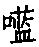
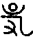
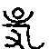

●聪明不能敌业，富贵岂免轮回。生死到来，一无所靠。唯阿弥陀佛，能为恃怙。惜世人知者甚少，知而真信实念者更少也。
生死大事，须当预办。若待临行方修，恐被业力所夺。
（《新编全本印光法师文钞》卷二第249页 复永嘉周群铮居士书）
古语云：聪明不能敌业，富贵岂免轮回。生死到来，一无所靠。唯阿弥陀佛，能为恃怙。惜世人知者甚少，知而真信实念者更少也。（《新编全本印光法师文钞》卷二第374页 复包右武书二）
●出息虽存，入息难保。一息不来，即属后世。当观此娑婆，浊恶甚于圊厕。信彼极乐，即我本有家乡。不求此世来生，人天王等福乐。唯愿报终命尽，蒙佛接引往生。
光阴迅速，时序更迁。刹那刹那，一念不住。此殆 ⑴ 造物出广长舌，普为尔我一切众生说人命无常，荣华不久，急寻归路，免受沉沦之无上妙法耳。汝既厌弃世荣，发心出家，必须努力勤修，切莫因循度日。出息虽存，入息难保。一息不来，即属后世。当念形质虽禀五漏 ⑵ ，心性原具三德。痛洗积劫之女习，力持弥陀之圣号。观此娑婆，浊恶甚于圊厕 ⑶ 。信彼极乐，即我本有家乡。不求此世来生，人天王等福乐。唯愿报终命尽，蒙佛接引往生。朝斯夕斯，念兹在兹。念极功纯，感应道交。临命终时，必克果愿。既生净土，顿悟无生。回观世间富贵，奚啻阳焰空华 ⑴ ，直同囹圄 ⑵ 毒海耳。（《新编全本印光法师文钞》卷七第1408页 示某比丘尼）
何况我等凡夫，业根深重，不致力于此，是舍易而求难，惑之甚矣。且今世杀人之具，日新月异，若飞机大炮，毒气死光 ⑶ 等，山河不能阻，坚物不克御，我等血肉之躯，何能当此。而人生朝露，无常一到，万事皆休。是以欲求离苦得乐者，当及时努力念佛，求佛加被，临终往生。一登彼土，永不退转，华开见佛，得证无生，方不辜负得闻此法而信受也。唯愿大众精进行持，是所至祷。（《新编全本印光法师文钞》卷二十第1633页 上海护国息灾法会法语）
●贪恋尘境，不能放下。三途一报百千劫，悲哉。
●欲求了生死之法，唯信愿念佛求生西方，最为第一。
古人云，死生亦大矣，可不悲哉。知死生之可悲，当求所以了生死之法，则可悲者，转为可乐也。若不求了生死之法，徒生悲感，有何所益。大丈夫生于世间，事事无不预为之计。唯于生死一事，反多置之不问。直待报终命尽，则随业受报，不知此一念心识，又向何道中受生去也。人天是客居，三途是家乡。三途一报百千劫，复生人天了无期。由是言之，则了生死之法，固不可不汲汲讲求也。须知法门无量，皆须自力断惑证真，方有了生死分，则末世众生，颇难现生即得实益。唯信愿念佛求生西方，最为第一，以其仗佛慈力，即未断惑业之人，亦可出此娑婆，登彼极乐，实为我辈无力断惑者之一大恃怙。（《新编全本印光法师文钞》卷十第617页 净土问辨功过格合刊序）
●但将一个死字，贴到额颅上，挂到眉毛上。
至谓欲心不贪外事，专念佛。不能专，要他专。不能念，要他念。不能一心，要他一心等。亦无奇特奥妙法则，但将一个死字，贴到额颅上，挂到眉毛上。心常念曰，我某人从无始来，直至今生，所作恶业，无量无边。假使恶业有体相者，十方虚空，不能容受。宿生何幸，今得人身，又闻佛法。若不一心念佛求生西方，一气不来，定向地狱镬汤炉炭剑树刀山里受苦，不知经几多劫。纵出地狱，复堕饿鬼，腹大如海，咽细如针，长劫饥虚，喉中火燃，不闻浆水之名，难得暂时之饱。从饿鬼出，复为畜生，或供人骑乘，或充人庖厨 ⑴ 。纵得为人，愚痴无知，以造业为德能，以修善为桎梏 ⑵ ，不数十年，又复堕落。经尘点劫，轮回六道。虽欲出离，末由也已。能如是念，如上所求，当下成办。（《新编全本印光法师文钞》卷一第53页 复邓伯诚居士书二）
●劫难之中，当竭力专修净业，以期往生净土。不然，一息不来，而欲再闻如此之径直法门，恐无有如是之侥幸了。
今之时，是何时也。南北相攻，中外相敌。三四年来，人死四五千万。自有生民以来，未闻有如此之惨凄者。又复风吹，水冲，地震，瘟疫，各处频频见告。又兼水旱，不一年中，每兼受其灾。诸物之贵，比昔几倍。当斯时也，幸而得生，敢不竭力专修净业，以期往生净土乎？敢以幸得之身，游逸其志，不注定一法，而泛泛然致力于不契时机之法门乎？倘或一息不来，而欲再闻如此之径直法门，恐无有如是之侥幸也已。（《新编全本印光法师文钞》卷一第184页 复永嘉某居士书五）
●怕死便因贪成障，净土之境不现，往生西方，便成画饼。故修西方人，今日死也好，再活一百二十岁死也好。一切任彼前业，不去妄生计较。倘信愿真切，报终命尽，便即神超净域，业谢尘劳。
况求生西方者，不可怕死。若今日即死，今日即生西方。所谓朝闻道，夕死可矣。岂可今日要死，且不愿死。既贪恋尘境，不能放下。便因贪成障，净土之境不现，而随业受生于善恶道中之境便现。境现，则随业受生于善恶道中矣。往生西方，便成画饼。故修西方人，今日死也好，再活一百二十岁死也好。一切任彼前业，不去妄生计较。倘信愿真切，报终命尽，便即神超净域，业谢尘劳。莲开九品之花，佛授一生之记矣。（《新编全本印光法师文钞》卷一第65页 复高邵麟居士书一）
●思地狱苦，发菩提心。若不一心念佛，一气不来，定随宿生今世之最重恶业，堕三途恶道，长劫受苦，了无出期。
念佛时不能恳切者，不知娑婆苦，极乐乐耳。若念人身难得，中国难生，佛法难遇，净土法门更为难遇，若不一心念佛，一气不来，定随宿生今世之最重恶业，堕三途恶道，长劫受苦，了无出期。如是则思地狱苦，发菩提心。菩提心者，自利利他之心也。此心一发，如器受电，如药加硫，其力甚大，而且迅速。其消业障，增福慧，非平常福德善根之所能比喻也。（《新编全本印光法师文钞》卷二第281页 复陈慧超居士书）
●生死到来，人各有此日，故宜常作临终想。以怖苦心念佛，即是出苦第一妙法。
今之世道，乃患难世道。若不以阿弥陀佛、观世音菩萨为依怙而常念之，则祸患之来，或所不测，及其卒遇，徒唤奈何。倘能预先持念，必有冥为转移。况生死到来，人各有此日。故宜常作临终想，则一切非分之妄想，与不能资之以了生死之诸法门，自不致力驰骛 ⑴ ，而令此决定仗之可了生死之法荒疏不修也。（《新编全本印光法师文钞》卷二第361页 复袁闻纯居士书）
念佛要时常作将死、将堕地狱想。则不恳切亦自恳切，不相应亦自相应。以怖苦心念佛，即是出苦第一妙法，亦是随缘消业第一妙法。（《新编全本印光法师文钞》卷二第388页 复永嘉某居士书六）
●尘境即可作入道之缘。只要将一个死字（此字好得很），挂到额颅上。心有所主，不随境转，尘劳即为解脱。
接手书，知治习之心，唯勤唯切，而消习之效，未得未见。其故何也，盖以生死心不切，而只将此超凡入圣，消除惑业，成就净念，作口头活计，故无实效也。倘知人身难得，佛法难闻，净土法门更为难闻。今幸得此大丈夫身，又闻最难闻之净土法门。敢将有限光阴，为声色货利消耗殆尽，令其仍旧虚生浪死，仍复沉沦六道，求出无期者乎？直须将一个死字（此字好得很），挂到额颅上。凡不宜贪恋之境现前，则知此吾之镬汤 ⑵ 炉炭也，则断不至如飞蛾赴火，自取烧身矣。凡分所应为之事，则知此吾之出苦慈航也，则断不至当仁固让，见义不为矣。如是则尘境即可作入道之缘，岂必屏绝尘缘，方堪修道乎？盖心有所主，不随境转，则即尘劳为解脱。（《新编全本印光法师文钞》卷三第431页 复宁波某居士书）
●唯有念念畏死，及死而堕落三途恶道，则佛念自纯，净业自成。
欲求出苦之要，唯有念念畏死，及死而堕落三途恶道，则佛念自纯，净业自成。一切尘境，自不能夺其正念矣。（《新编全本印光法师文钞》卷三第433页 复宁波某居士书）
●念佛心不归一，由于生死心不切。若作将被水冲火烧，无所救援之想及将死、将堕地狱之想，则心自归一，无须另求妙法。
温州之灾，闻之惨然。天灾人祸，无有底极。实足为三界无安，犹如火宅之证。亦堪为信愿念佛，往生西方之最切警策也。念佛心不归一，由于生死心不切。若作将被水冲火烧、无所救援之想及将死、将堕地狱之想，则心自归一，无须另求妙法。故经中屡云，思地狱苦，发菩提心。此大觉世尊最切要之开示，惜人不肯真实思想耳。地狱之苦，比水火之惨，深无量无边倍。而想水冲火烧则悚然，想地狱则泛然 ⑴ 者，一则心力小，不能详悉其苦事，一则亲眼见，不觉毛骨为悚然耳。（《新编全本印光法师文钞》卷三第521页 致包师贤居士书）
●念佛时，即作已死未往生想。所有一切妄念，皆用不著。能如是念，必有大益。
人在世间，不能超凡入圣，了生脱死者，皆由妄念所致。今于念佛时，即作已死未往生想。于念念中，所有世间一切情念，悉皆置之度外。除一句佛号外，无有一念可得。何以能令如此，以我己死矣，所有一切妄念，皆用不著。能如是念，必有大益。（《新编全本印光法师文钞》卷十三第140页 复朱仲华居士书二）
●欲治此病，非想念苦境不可。
汝之所说，乃一切人之通病。欲治此病，非想念苦境不可。经云，思地狱苦，发菩提心。然地狱之苦，以未曾亲见，无善根人，尚不能顿发出离逃避之心。最切要者，当想两军交战，炮声如雷，子弹如雨，飞艇在上，地雷在下，一时齐发，则两军之人同皆粉身碎骨，随炮子以分散，化作乌有，我亦身预其中。当其将发未发之时，尚知念佛求生之事。此时惶恐万分，而营官指挥，各执枪炮，不敢稍懈，懈则即时见杀。此时断不至事务所牵，恐怖所碍，不能念佛矣。此种境界，不及地狱万分之一，以凡夫心力所能想到，故想时便毛骨悚然，如亲经历也。汝之懈怠，由于不详审未来之苦。倘能详审以思，断不至长时懈怠。至于事牵，亦属浮泛之遮护语，非实情也。今为一喻，如孝子思亲，虽与人百凡应酬，其心中常常有思亲之念，不能暂忘。又如贪淫之人，常想美女，彼虽终日各有事业，而其心中想美女之心，不能一刻相忘。汝能若临阵之欲脱苦，孝子之思亲，淫士之恋女，则一切时一切处，均能念佛，不能间断矣。其余种种法则，《文钞》悉具。但熟读精思自得，故不多及。（《新编全本印光法师文钞》卷十八第1197页 复智正居士书二）
●念佛可了生脱死，当知感恩。能认真念佛，即为报恩。
念佛是人生一件最要事，非因亲丧方念，平时便不念。亲丧乃系为亲起见，实即以亲死，引汝等同证永劫不死之一大事也，当知感恩。能认真念佛，即为报恩。（《新编全本印光法师文钞》卷八第171页 复谈少抚居士书）
●将一个死字，挂到额颅上。
汝将死，快念佛。心不专一，决堕地狱，饿鬼畜生尚难求，勿妄想人天福果。
汝将死，快念佛。志若真诚，便预莲池，声闻缘觉犹弗住，定克证等妙圆乘。（《新编全本印光法师文钞》卷十二第1029页 楹联）
虚度七十，来日无几。如囚赴市，步步近死。
谢绝一切，专修净土。倘鉴愚诚，是真莲友。
（《新编全本印光法师文钞》卷二十二第1987页 苏州报国寺关房题壁偈）
●所言信者，须信娑婆之苦，苦不可言。极乐之乐，乐无能喻。能如是信，可谓真信。自己见得及者如是信，即自己见不及者，亦必也如是信。仰信佛言，断断不可以己凡情不测，稍生丝毫疑念，方可谓真信矣。坚固真信，虽释迦诸佛现身，令其舍此净土，修余法门，亦不稍移其志。
凡修净业，以决志求生西方为本。而净土法门，以信愿行三法为宗。所言信者，须信娑婆之苦，苦不可言。极乐之乐，乐无能喻。娑婆之苦，所谓生、老、病、死、爱别离、怨憎会、求不得、五阴（音印，与荫同，盖覆也。）炽盛。（五阴炽盛者，谓众生于色受想行识五阴之中，起惑造业，如火炽然，不能止息也。此一属招苦之因，前七乃所招苦果。娑婆之苦，虽多逾恒沙，此八摄无不尽。诸苦既经身历，不烦备释。）极乐之乐，约根身则莲华化生，长生不死。体禀男质 ⑴ ，绝无女形。不闻恶道之名，况有其实。约器界 ⑵ 则黄金为地，七宝为池，行树参天，楼阁住空。思衣得衣，思食得食。凡所受用，无不如意。而诸凡用度，皆是化现。非如此土，由人力造作而成也。而弥陀导师相好光明，无量无边，一睹慈容，即证法忍。况复观音势至，清净海会，各舒净光，同宣妙音。故虽具缚凡夫，通身业力，若能信愿真切，即蒙佛慈摄受。一得往生，则烦恼恶业，彻底消灭。功德智慧，究竟现前。能如是信，可谓真信。欲详知者，当熟读《阿弥陀经》，《无量寿经》，《观无量寿佛经》，此名净土三经，专谈净土缘起事理。其余诸大乘经，咸皆带说净土。而华严一经，乃如来初成正觉，为四十一位法身大士称性直谈一乘妙法。末后善财遍参知识，于证齐诸佛之后，普贤菩萨为说十大愿王，普令善财及与华藏海众，回向往生西方极乐世界，以期圆满佛果。而观经下品下生，五逆十恶，具诸不善，临命终时，地狱相现，有善知识，教以念佛，彼即受教称念佛名，未满十声，即见化佛授手，接引往生。《大集经》云，末法亿亿人修行，罕一得道，唯依念佛得度生死。是知念佛一法，乃上圣下凡共修之道，若愚若智通行之法。下手易而成功高，用力少而得效速。以其专仗佛力，故其利益殊胜，超越常途教道。昔人谓余门学道，似蚁子上于高山。念佛往生，如风帆扬于顺水。可谓最善形容者矣。若欲研究，《阿弥陀经》有蕅益大师所著要解，理事各臻其极，为自佛说此经来第一注解，妙极确极。纵令古佛再出于世，重注此经，亦不能高出其上矣。不可忽略，宜谛信受。《无量寿经》有隋慧远法师疏，训文释义，最为明晰。《观无量寿佛经》有善导和尚《四帖疏》，唯欲普利三根，故多约事相发挥。至于上品上生章后，发挥专杂二修优劣，及令生坚固真信，虽释迦诸佛现身，令其舍此净土，修余法门，亦不稍移其志。可谓净业行者之指南针也。若夫台宗《观经疏妙宗钞》，谛理极圆融，中下根人，莫能得益。故不若《四帖疏》之三根普被，利钝均益也。既知如上所说义理，必须依此谛信。自己见得及者如是信，即自己见不及者，亦必也如是信。仰信佛言，断断不可以己凡情不测，稍生丝毫疑念，方可谓真信矣。（《新编全本印光法师文钞》卷二第194页 与徐福贤女士书）
●深信佛言，了无疑惑，方名真信。有真信，必定有真愿真行。否则不名真信。
第一要有真信。有真信，必定有真愿真行。否则不名真信。
（《新编全本印光法师文钞》卷十六第775页 复琳圃居士书）
深信佛言，了无疑惑，方名真信。切不可以凡夫外道知见，妄生猜度，谓净土种种不思议胜妙庄严，皆属寓言，譬喻心法，非有实境。若有此种邪知谬见，便失往生净土实益。其害甚大，不可不知。
（《新编全本印光法师文钞》卷一第92页 与陈锡周居士书）
●若能生信发愿，持佛名号，求生西方，如子忆母，自然上契佛心，感应道交。
阿弥陀佛，于往劫中，发四十八种大愿。有一愿云：“若有众生，称我名号，求生我国。乃至十念，若不生者，不取正觉。”是知佛念众生，如母忆子。众生若能生信发愿，持佛名号，求生西方，如子忆母，自然上契佛心，感应道交。现生蒙佛加被，业障消灭，诸缘顺适。临终蒙佛接引，带业往生极乐世界。从兹入圣超凡，了生脱死。较彼仗自力修戒定慧，直至惑业净尽，方了生死者，其难易奚啻天渊之别。（《新编全本印光法师文钞》卷六第1276页 岳步云为亲所设佛堂说）
●一心念佛，极力至心求生西方，即可感通佛力，仗佛慈力，带业往生。须知佛力不可思议，法力不可思议，自性功德力不可思议。此三不可思议，若无信愿念佛之志诚心，则无由发现。有志诚求生西方之心，此三种不可思议大威神力，即得显现。
汝病既重，但当一心念佛，求佛接引往生西方。此心若诚，必能满愿。至于所有罪业，不必以此为虑。以果能极力至心求生西方，即可仗佛慈力，带业往生。譬如大石，装于船中，即可由海此岸，以至彼岸。须知佛力不可思议，法力不可思议，自性功德力不可思议。此三不可思议，若无信愿念佛之志诚心，则无由发现。有志诚求生西方之心，此三种不可思议大威神力，即得显现。如乘大火轮，又遇顺风，不离当念，即生西方。汝但深信我语，自然可满汝愿。今为汝取法名为慧脱，谓以智慧，信愿念佛，即得往生西方，脱离生死也。（《新编全本印光法师文钞》卷十二第932页 示冯右书居士临终法语）
●愿离娑婆苦，愿得极乐乐。其愿之切，当如堕厕坑之急求出离，又如系牢狱之切念家乡。己力不能自出，必求有大势力者提拔令出。
既知娑婆是苦，极乐是乐，应发切实誓愿，愿离娑婆苦，愿得极乐乐。其愿之切，当如堕厕坑之急求出离，又如系牢狱之切念家乡。己力不能自出，必求有大势力者提拔令出。娑婆世界，一切众生，于逆顺境，起贪嗔痴，造杀盗淫，秽污本有妙觉明心，乃无底之厕坑。既造恶业，必受恶报，久经长劫，轮回六道，乃不赦之牢狱。阿弥陀佛于往劫中，发四十八愿，度脱众生，有一愿云，若有众生闻我名号，求生我国，乃至十念，若不生者，不取正觉。阿弥陀佛誓愿度生，若众生不求接引，佛亦无可奈何。倘志心称名，誓求出离娑婆者，无一不蒙垂慈摄受也。阿弥陀佛有大势力，能拔娑婆无底厕坑不赦牢狱之人，直下出离其中，悉皆安置于极乐本有家乡，令其入佛境界，同佛受用也。（《新编全本印光法师文钞》卷一第93页 与陈锡周居士书）
●修净土人，断断不可求来生人天福乐。唯欲临命终时，蒙佛接引，往生西方，了生脱死，便是正确的发愿。
既生信已，必须发愿。愿离娑婆，如狱囚之冀出牢狱。愿生极乐，如穷子之思归故乡。若其未生净土以前，纵令授以人天王位，亦当视作堕落因缘，了无一念冀慕之想。即来生转女为男，童真出家，一闻千悟，得大总持，亦当视作纡曲修途 ⑴ ，了无一念希望之心。唯欲临命终时，蒙佛接引，往生西方。既得往生，则了生脱死，超凡入圣，位居不退，忍证无生。回视人天王等，及出家为僧，不知净土，修余法门，历劫辛勤，莫由解脱者，如萤火之与杲日，蚁垤 ⑵ 之与泰山矣。可胜悲哉，可胜悼哉。以故修净土人，断断不可求来生人天福乐，及来生出家为僧等。若有丝毫求来生心，便非真信切愿，便与弥陀誓愿间隔，不能感应道交，蒙佛接引矣。以此不可思议殊胜妙行，竟作人天有漏福因。而况享福之时，必造恶业。既造恶业，难逃恶报。如置毒于醍醐之中，便能杀人。不善用心者，其过如是。必须彻底斩断此等念头，庶净土全益，通身受用矣。（《新编全本印光法师文钞》卷二第198页 与徐福贤女士书）
●信者，诸佛现前劝慰，令修余法，不为所动；愿者，此生誓往西方，不取多生修习；行者，真实依教起行，老实一心念佛。
●念佛之法，当都摄六根，将南无阿弥陀佛六字，一句一句，一字一字，口中念得明明白白，心中念得明明白白，耳里听得明明白白。故知用功之道，端在专摄，不事情想。若无思想，哪有邪见。邪见既无，即是正智。
修持净土念佛法门，当以信愿行为宗。信者，当笃信佛力。弥陀如来在因地中，发四十八愿，愿愿度生，中有念我名号，不生我国，誓不成佛。今者因圆果满，故我今念佛，必得往生。次信佛力慈悲，摄受众生，如母忆子。子若忆母，如母忆时，定蒙接引。次信净土法门，如永明禅师《四料简》所言，较诸余法，其间大小难易得失，迥然不同。虽有余师称赞余法，不为所动，乃至诸佛现前劝慰，令修余法，亦不退转，此乃真所谓信也。愿者，愿以此生誓往西方，不取多生修习，于秽土中头出头没，从迷入迷。复愿既生西方，回至娑婆，度脱一切众生。行者，真实依教起行。《大势至念佛圆通章》云：“都摄六根，净念相继，得三摩地，斯为第一。”则知念佛之法，当都摄六根。都摄六根之前，尤当先摄二三根。二三根者，何也？即耳口心是也。将南无阿弥陀佛六字，一句一句，一字一字，口中念得明明白白，心中念得明明白白，耳里听得明明白白。稍有不分明处，即是不真切而有妄想。（只念不听，易生妄想。）念佛固要字句分明，不加思索，其他看经亦然。切莫一路看一边分别，则获益少而情想多。……故知用功之道，端在专摄，不事情想。若无思想，哪有邪见。邪见既无，即是正智。（《新编全本印光法师文钞》卷二十一第1674页 净土法门说要）
●娑婆世界具足三苦，八苦，无量诸苦。众生迷昧，反以为乐，诚堪怜愍。若知此界之苦，则厌离娑婆之心，自油然而生。
吾人所居之世界，则具足三苦，八苦，无量诸苦，了无有乐，故名娑婆。梵语娑婆，此云堪忍，谓其中众生，堪能忍受此诸苦故。然此世界，非无有乐。以所有乐事，多皆是苦。众生迷昧，反以为乐。如嗜酒耽色，畋猎 ⑴ 摴蒱 ⑵ 等，何尝是乐。一班愚夫，耽著不舍，乐以忘疲，诚堪怜愍。即属真乐，亦难长久。如父母具存，兄弟无故，此事何能常恒。故乐境一过，悲心续起。则谓了无有乐，非过论也。此世界苦，说不能尽。以三苦八苦，包括无遗。三苦者，一苦是苦苦，二乐是坏苦，三不苦不乐是行苦。苦苦者，谓此五阴身心，体性逼迫，故名为苦。又加以恒受生老病死等苦，故名苦苦。坏苦者，世间何事，能得久长？日中则昃 ⑴ ，月盈则食，天道尚然，何况人事。乐境甫现，苦境即临。当乐境坏灭之时，其苦有不堪言者，故名乐为坏苦也。行苦者，虽不苦不乐，似乎适宜，而其性迁流，何能常住，故名之为行苦也。举此三苦，无苦不摄。八苦之义，书中备述。若知此界之苦，则厌离娑婆之心，自油然而生。若知彼界之乐，则欣求极乐之念，必勃然而起。由是诸恶莫作，众善奉行，以培其基址。再加以至诚恳切，持佛名号，求生西方。则可出此娑婆，生彼极乐，为弥陀之真子，作海会之良朋矣。（《新编全本印光法师文钞》卷五第914页 初机净业指南序）
●临终定欲往生西方，即为人天王身，普利众生之高僧身，决不生一念欲受之心。如是发愿，方能与佛之誓愿相应。
当须发决定心，临终定欲往生西方。且莫说碌碌庸人之身，不愿更受，即为人天王身，及出家为僧，一闻千悟，得大总持，大宏法化，普利众生之高僧身，亦视之若毒荼罪薮 ⑵ ，决定不生一念欲受之心。如是决定，则己之信愿行，方能感佛。佛之誓愿，方能摄受。感应道交，蒙佛接引，直登九品，永出轮回矣。（《新编全本印光法师文钞》卷一第74页 复高邵麟居士书三）
●信愿为吾人生西方大根据。
往生净土，固贵久修。然其所重，在乎决定不易之志愿耳。彼终身念佛，心常冀人天福报者，纵令精进，因其心愿尚恋此娑婆，何得有生极乐之望乎？固知信愿，实为吾人生西方大根据也。（《新编全本印光法师文钞》卷十六第684页 复智圆居士书）
●为了生死，则生死之苦，自生厌心，西方之乐，自生欣心。如此则信愿二法，当念圆具。
至于念佛一事，最要在了生死。既为了生死，则生死之苦，自生厌心，西方之乐，自生欣心。如此则信愿二法，当念圆具。再加以志诚恳切，如子忆母而念。则佛力法力，自心信愿功德力，三法圆彰，犹如杲日当空，纵有浓霜层冰，不久即化。（《新编全本印光法师文钞》卷三第519页 复徐彦如轶如二居士书）
●深信持名佛号，广阅净土经论，参承净业知识。
居士既深信念佛，若未参承净业知识，又不广阅净土经论，则真信切愿，从何而生？纵能执持名号，只因不求出离，便成人天因果，受享痴福。因福造业，仍沉恶道。倘再路头不真，涉入邪见，则善因反招恶果，人天福报，亦不可得，阿鼻极苦，长劫难出。譬如入海，既无导师，又乏指南，漂流于狂波巨浪之中，茫茫不知所趣，纵能撑篙摇橹，岂能免于沉溺。（《新编全本印光法师文钞》卷一第61页 与福建刘廷诚居士书）
窃谓净土一法，为诸法之归宿，乃吾人依之以自利利他者。何得不先研究得极无可疑，不被一切经教知识语言所摇夺？而泛泛然研究其他经典，则愈研究愈将净土看得寻常矣。若先知净土之所以，再研究其余经论，则愈研究愈将净土看得高深矣。（《新编全本印光法师文钞》卷二十三第80页 复金慧畅居士书）
●若无信愿，故不能与佛相应。蕅益云：得生与否，全由信愿之有无。品位高下，全由持名之深浅。乃千佛出世不易之铁案也。能信得及，许汝西方有分。
须知西方极乐世界，莫说凡夫不能到，即小乘圣人亦不能到，以彼系大乘不思议境界故也。小圣回心向大即能到。凡夫若无信愿感佛，纵修其余一切胜行，并持名胜行，亦不能往生。是以信愿最为要紧。蕅益云：“得生与否，全由信愿之有无。品位高下，全由持名之深浅。”乃千佛出世不易之铁案也。能信得及，许汝西方有分。（《新编全本印光法师文钞》卷一第77页 复高邵麟居士书三）
又念佛一法，要紧在有真信，切愿。有真信，切愿，纵未到一心不乱，亦可仗佛慈力，带业往生。若无信、愿，纵能心无妄念，亦只是人天福报，以与佛不相应故。固当注重于信愿求生西方也。（《新编全本印光法师文钞》卷八第185页 复又真师觉三居士书）
●末世众生，障深慧浅，修余法门，了生脱死，诚为甚难希有之事。唯恃信愿，皆可蒙佛慈接引往生。噫！如来大慈普度，一物不遗。
末世众生，业障深厚，善根浅薄，心智狭劣，寿命短促。加以知识希少，魔外纵横。修余法门，欲于现生断惑证真，了生脱死，诚为甚难希有之事。唯净土一法，专仗佛力，以故不论断证，唯恃信愿。信愿若具，虽罪大恶极，将堕阿鼻地狱之流，尚可以仗十念之力，径蒙佛慈，接引往生。噫！如来大慈普度，一物不遗，唯此一法，最为周挚。（《新编全本印光法师文钞》卷五第989页 净土释疑序）
●净土法门，乃即生了生死之无上直捷圆顿法门，若具真信切愿念佛求生西方，无一人不得生者。我人虽根器下劣，如以印祖开示生信发愿，且常随动随静，将一句弥陀当做本命元辰，往生绝对有分。
汝心高如天，志劣如地，口虽云依光所说，实则全依自己偏见。净土法门，唯信为本。信得极，五逆十恶皆能往生。信不及，通宗通教未曾断惑者，皆无其分。汝既不能通宗通教断惑证真，仗自力以了生死，又不信佛力不可思议，自性功德不可思议，若具真信切愿念佛求生西方，无一人不得生者。净土法门，乃即生了生死之无上直捷圆顿法门。于此法门方向尚未知，便以好高务胜之狂妄心，去研究《起信论》。《起信论》实为学佛之纲要，然于劣根，及初机人，亦难得益。即研得《起信论》通彻无疑，其用功尚须依念佛求生，方为稳当。况法相、禅、教之精微奥妙高深而不可企及乎哉？汝心如此其高，乃不知分量之高。其志又谓“根性劣弱，何望生西，但能不堕恶道，此堪自慰。”不知不生西方，将来必堕恶道。此系违背佛教，及与光说，何可云始终奉行教诲、一心持念弥陀乎哉？今以汝之身，膺人之职业，又非上等资格，其所立之心与志，真令人可叹可笑。汝且息彼做大通家之狂妄心，专心研究净土法门中书，《文钞》与高邵麟、徐女士书中备说。随所开示，依之生信发愿，不以自己根器下劣，高推往生于度外。且常随动随静，将一句弥陀，当做本命元辰，其居心行事，须要与诸恶莫作、众善奉行之宗旨合。（《新编全本印光法师文钞》卷二第319页 复周智茂居士书）
●指对净土法门信愿具足者言也。
欲生西方，最初须有真信切愿。若无真信切愿，纵有修行，不能与佛感应道交，只得人天福报，及作未来得度之因而己。若信愿具足，则万不漏一。永明所谓“万修万人去”者，指信愿具足者言也。（《新编全本印光法师文钞》卷一第94页 与陈锡周居士书）
●此之一法，乃完全是仗佛慈力加被接引耳，不是靠自力。故只要生信发愿，个个都能够往生。
须知佛法，法门无量，通通皆须做到业尽情空，方可了生脱死，其难也难如登天。现在全世界，恐亦难有几个做得到的人。若志诚恳切念佛，求生西方，无论什么人，都好往生西方，了生脱死。唯有不生信、不发愿者，不能生。若有真信切愿，无一不生者。此之一法，乃完全是仗佛慈力加被接引耳。譬如坐火轮船过海，是仗船力，不是自家的本事。汝父女二人，当依我语，则可不虚此生此遇矣。（《新编全本印光法师文钞》卷八第140页 致戚友卿先生书）
●信愿不真切，口说往生，心恋尘境。悠悠泛泛，希图来世富贵。平时不教眷属念佛，及至临终，不唯不助念，反为瞎张罗，破坏正念。哀哉！
世之念佛人多，往生人少者，一以不依佛教，口说往生，心恋尘境。一以不教眷属念佛，并不预说助念之利益，及瞎张罗，预先抹澡、换衣、问事、哭泣等祸害。及至临终，眷属不唯不助念，反为破坏正念，功败垂成，事依俗见，令亡人沉生死苦海。可不哀哉！（《新编全本印光法师文钞》卷十三第194页 复独山杨慧芳居士书一）
汝所说往生者少，实由信愿不真切之所致。信愿若真切，即临终始念，亦有得生之理。若悠悠泛泛，心中尚在做来生福报之梦，何能得生？此病根也，不可不知。（《新编全本印光法师文钞》卷十九第1285页 复李少垣居士书一）
顾何以世间念佛人多，真能了生死者少？只以念佛之人，无深信切愿，但求福报，希图来世富贵。不知希图来世富贵，譬如仰天射箭，力尽则还，非但无益，且有损也。即如今世念佛，感人天福报，有福报而无正智。以有福报故，则有势位富贵。以无正智故，则愚痴而不信因果。夫以不信因果之人，处势位富贵之地，如虎附翼，益增其恶。故福报愈大，造孽愈多。既造恶业，应受恶报。此所谓三世怨也。故念佛者，断不可存福报之心，当以猛利直前，往生西方，为了脱生死之妙法。（《新编全本印光法师文钞》卷二十一第1677页 净土法门说要）
●佛经中凡有称佛名处，无不皆有南无，故念佛宜念六字。或先念六字，至将毕则念四字。若始终不念南无，便为慢易。
念佛宜念六字，或先念六字，至将毕则念四字。始终念四字，颇不宜。以南无二字，即皈依、恭敬、顶礼、度我等义，人每图快图多，故多有念四字者。常闻有人主张专修之益，只令人念四字，发愿礼佛，皆云不必，则完全一门外汉，只知自己做功夫，不知求佛慈悲力。净土法门，以信愿行三法为宗，彼只在行上讲究，而行又去却礼拜，其行便难十分恳切，久则涉于悠忽浮泛。祈依《文钞》，勿依彼说。彼系自任己见，不依净土宗旨者。（《新编全本印光法师文钞》卷十五第444页 复陈飞青居士书四）
念佛宜六字，四字亦可。如初念则六字，念至半，或将止，则念四字。若始终不念南无，便为慢易。经中凡有称佛名处，无不皆有南无，何得自立章程。（此条系答代俞觉鲜居士之问）（《新编全本印光法师文钞》卷十七第837页 复卓智立居士书四）
●信愿门中，尤宜致力，庶可决定深得念佛之实益。若效他宗，专以功夫为事，弃信愿而不讲，其失大矣。
所言作事亦不忘念佛，此系念心纯熟之相，何可名昏沉，归于无记 ⑴ ？然亦非无念而念，但系无念而念之气分。若即认此为无念而念，则有类于钻木见烟，而谓得火，即便息钻，火便无由可得矣。汝之工夫颇好，到此境界，亦不容易。然须专精用功，且莫学今之好高务胜、见异思迁者，则将来之益，自可有不思议处。然此是行门中事，信愿门中，尤宜致力，庶可决定深得念佛之实益。若效他宗，专以工夫为事，弃信愿而不讲，则便成仗自力之法门，其失大矣。（《新编全本印光法师文钞》卷二十第1462页 复李觐丹居士书六）
●以不愿生故，故难仗佛力往生。
平生绝无信愿者，临终决定难仗佛力。既云善恶俱时顿现，且无论阿弥陀佛四字不现者，不得往生。即现，亦不得往生。何以故？以不愿生故，以不求佛，因不得蒙佛接引故。《华严经》云，假使恶业有体相者，十方虚空不能容受。古德云，如人负债，强者先牵。心绪多端，重处偏坠。今善恶皆现，由无信愿，便不能奈恶业何矣。须知仗自力，则恶业有一丝毫，便不能出离生死，况多乎哉。（《新编全本印光法师文钞》卷一第37页 复濮大凡居士书）
●念至一心，仍属自力，举世少有一二。末世众生之了生死者，不可得而见之矣。故不得以此为训，断佛慧命，疑误众生。
又无信愿，念至一心，无量无边之中，或可有一二往生。决不可以此为训，以断天下后世一切人往生净土之善根。何以故？以能仗自力，念至业尽情空，证无生忍者，举世少有一二。倘人各依此行持，置信愿而不从事，则芸芸众生，永居苦海，无由出离，皆此一言为之作俑也。而其人犹洋洋得意，以为吾言甚高。而不知其为断佛慧命，疑误众生之狂言也。哀哉！（世间善业，不出轮回。若对信愿具足之往生净业，则彼善业，仍属恶业。）净土一法，须另具只眼，不得以常途教义相例。使如来不开此法，则末世众生之了生死者，不可得而见之矣。（《新编全本印光法师文钞》卷一第37页 复濮大凡居士书）
●净土宗要，唯信愿行三法而已。若置信愿于度外，纵悟到极处，也断难往生。以故蕅益大师恐人受病，令其直念也。
入道多门，唯净土最为第一。净土宗要，唯信愿行三法而已。莲池之令人参者（即参念佛是谁），以当时宗门甚盛，不如是，或恐人以为异宗，而不肯修，又亦欲引宗门中悉修念佛三昧也。蕅益之不须参究者，以念佛一法不以开悟为事，若求开悟，或置信愿于度外，而念到极处，亦能开悟，不悟亦无所碍。纵悟到极处，若无信愿，则断难往生。以故大师恐人受病，令其直念也。（《新编全本印光法师文钞》卷二十三第79页 复金慧畅居士书）
●以彼系禅宗唯究自心者之方法，非净宗仗佛慈力，以求往生者之轨范也。光之所说，乃宗净宗古德之诚言，非臆见杜撰之偏论。
现今之世，谬乱已极。废经废伦，无可救药。然以道眼观之，是殆催人出此娑婆，生彼极乐之大警策。倘不怀出世之心，则将来之世，直无可为吾父母者。近来研究佛学者，实繁有徒，但天姿高者，每任臆见，偏重理性，不务事修。或以信愿为著相，或以参究为亲切。纵修净业，不依净土法门之宗旨，则致感应道隔，以现生了脱之法，作未来得度之因。令上等天姿，反不如愚夫愚妇，颛蒙念佛，为能得其实益，岂不大可惜哉！阁下既发心念佛，固当依净土宗旨，凡离信愿说念佛等开示，悉宜置之度外。以彼系禅宗唯究自心者之方法，非净宗仗佛慈力，以求往生者之轨范也。光之所说，乃宗净宗古德之诚言，非臆见杜撰之偏论。请熟读《净土十要》，则自可悉知。印光《文钞》，文虽浅陋，其于禅净界限，及普通特别法门之所以，佛力自力大小之得失，颇为详悉。倘肯详阅，亦未始绝无裨益。（《新编全本印光法师文钞》卷二十三第89页 致郑鸣之居士书）
●专修净土者，宜以莲池大师新定净土发愿文为主。此愿文事理周到，了无一义一法之渗漏。
汝既专修净土，宜以莲池大师新定净土发愿文为主。（省庵语录下卷，有此愿文注解，阅之自知其妙。）汝自立四愿，或兼用或不用皆可。以彼愿文，事理周到，了无一义一法之渗漏。彼云法界 ⑴ ，则包括无遗。汝云大千 ⑵ ，较法界量，奚啻大地一尘，大海一滴？（《新编全本印光法师文钞》卷一第75页 复高邵麟居士书三）
附：莲池大师发愿文
稽首西方安乐国，接引众生大导师。
我今发愿愿往生，惟愿慈悲哀摄受。
弟子某甲（众等），普为四恩三有、法界众生，求于诸佛一乘无上菩提道故，专心持念阿弥陀佛万德洪名，期生净土。又以业重福轻，障深慧浅，染心易炽，净德难成，今于佛前，翘勤五体，披沥一心，投诚忏悔。我及众生，旷劫至今，迷本净心，纵贪嗔痴，染秽三业，无量无边；所作罪垢，无量无边。所结冤业，愿悉消灭。从于今日，立深誓愿：远离恶法，誓不更造；勤修圣道，誓不退惰；誓成正觉；誓度众生。阿弥陀佛以慈悲愿力，当证知我，当哀愍我，当加被我。愿禅观之中，梦寐之际，得见阿弥陀佛金色之身，得历阿弥陀佛宝严之土，得蒙阿弥陀佛甘露灌顶，光明照身，手摩我头，衣覆我体。使我宿障自除，善根增长；疾空烦恼，顿破无明；圆觉妙心，廓然开悟；寂光真境，常得现前。至于临欲命终，预知时至；身无一切病苦厄难，心无一切贪恋迷惑；诸根悦豫，正念分明；舍报安详，如入禅定。阿弥陀佛与观音、势至、诸圣贤众，放光接引，垂手提携。楼阁幢幡，异香天乐，西方圣境，昭示目前。令诸众生，见者闻者，欢喜感叹，发菩提心。我于尔时，乘金刚台，随从佛后，如弹指顷，生极乐国。七宝池内，胜莲华中，华开见佛，见诸菩萨，闻妙法音，获无生忍。于须臾间，承事诸佛，亲蒙授记。得授记已，三身四智，五眼六通，无量百千陀罗尼门，一切功德，皆悉成就。然后不违安养，回入娑婆；分身无数，遍十方刹。以不可思议自在神力，种种方便，度脱众生。咸令离染，还得净心。同生西方，入不退地。如是大愿，世界无尽，众生无尽，业及烦恼，一切无尽，我愿无尽。愿今礼佛、发愿、修持功德，回施有情。四恩总报，三有齐资。法界众生，同圆种智。（莲池大师：《云栖法汇》）
●古人谓净土法门，唯佛与佛乃能究尽。登地菩萨，不能知其少分。我等博地凡夫，即当仰信诸佛诸祖诚言，断不可有一念疑心。
净土法门若信得及，何善如之。若己智有不了，即当仰信诸佛诸祖诚言，断不可有一念疑心。疑则与佛相背，临终定难感通矣。古人谓净土法门，唯佛与佛乃能究尽，登地菩萨，不能知其少分。夫登地大士，尚不全知，岂可以博地凡夫，妄生臆断 ⑴ 乎？（《新编全本印光法师文钞》卷一第48页 复邓伯诚居士书一）
●今既不发愿，亦岂有信？信愿全无，故不能与弥陀宏誓感应道交。故有真信者，必有切愿。
●念佛一法，乃仗佛力出三界、生净土耳。须知去却信愿念佛，与宗家之参究无异。若得往生，则因果不相符契矣。蕅益云，得生与否，全由信愿之有无。品位高下，全由持名之深浅。乃铁案也。
刀砍不入一段，原无可疑。以阁下将自力他力、禅宗净宗之界限未分，致成一大疑团耳。念佛一法，乃仗佛力出三界、生净土耳。今既不发愿，亦岂有信？（有真信者，必有切愿。）信愿全无，但念佛名，仍属自力。以无信愿，故不能与弥陀宏誓感应道交。若见思惑尽，或可往生。若全未断，及断未净尽，则业根尚在，何能即出轮回？五祖戒 ⑴ 、草堂青 ⑵ 等，即是确证。须知去却信愿念佛，与宗家之参究无异。若得往生，则因果不相符契矣。蕅益云，得生与否，全由信愿之有无，品位高下，全由持名之深浅。乃铁案也。经云一心不乱，远承前文依正功德，即是教令生信。近承上文众生闻者，应当发愿，愿生彼国，即是教令发愿。又况下文劝信劝愿，不一而足。阁下截断前文，止执一句，故有不贵发愿之疑。又以无信愿之一心，与有信愿之一心，敌体同观，故有刀砍不入，岂非纯一，何以无愿不得往生之疑。（《新编全本印光法师文钞》卷一第34页 复濮大凡居士书）
●净土一法，因法门广大，而其修法又极简易，被称为难信之法。若能于此法深生信心，虽是具缚凡夫，其种性已超二乘之上。由是言之，信之一法，不可不急急讲求，以期深造其极。
如来知诸众生唯仗自力了脱之难，故于一切法门之外，特开念佛求生净土一门。但能信愿真切，即五逆十恶极重罪人，临命终时，地狱相现，有善知识教以念佛，若能念佛十声，或止数声，或止一声，亦得蒙佛慈力，接引往生。况彼修行世善，不作诸恶者乎？若是精修梵行，禅定力深，则往生品位更高，见佛闻法最速。即大彻大悟，断惑证真之人，亦须回向往生，以期圆证法身，速成佛果。其余法门，小法则大根不须修，大法则小根不能修。唯兹净土一门，三根普被，利钝全收，上之则观音、势至、文殊、普贤，不能超出其外，下之则五逆十恶，阿鼻种性，亦可预入其中。使如来不开此法，则末世众生，欲即生了生脱死，便绝无企望矣。然此法门如是广大，而其修法又极简易。由此之故，非宿有净土善根者，便难谛信无疑。不但凡夫不信，二乘犹多疑之。不但二乘不信，权位菩萨，犹或疑之。唯大乘深位菩萨，方能彻底了当，谛信无疑。能于此法深生信心，虽是具缚凡夫，其种性已超二乘之上。喻如太子堕地，贵压群臣，虽其才德未立，而仗王力故，感如此报。修净土人，亦复如是。由以信愿持佛名号，即能以凡夫心，投佛觉海，故得潜通佛智，暗合道妙也。欲说净土修法，若不略陈诸法仗自力了脱之难，此法仗佛力往生之易，则不是疑法，便是疑自。若有丝毫疑心，则因疑成障，莫道不修，修亦不得究竟实益也。由是言之，信之一法，可不急急讲求，以期深造其极乎哉？（《新编全本印光法师文钞》卷一第88页 与陈锡周居士书）
●净土法门，为一切法门中之特别法门。心无成见者，则易生信。知为特别法门者，则必极力提倡。将特别法门作普通法门论者，则不但不生信且将辟驳矣。以故名为难信之法。汝能信得及，许汝往生有分。
须知净土法门，乃如来一代所说一切法门中之特别法门。愚夫愚妇心无成见，则易生信。通宗通教者，知为特别法门，则必极力提倡。通宗通教而以特别法门作普通法门论，则不但不生信且将辟驳矣，以故名为难信之法。故光常曰净土法门，为十方三世一切诸佛上成佛道下化众生成始成终之总持法门。故得九界（六道三乘之九法界）同归，十方共赞，千经俱阐，万论均宣也。汝能信得及，许汝往生有分。（《新编全本印光法师文钞》卷二十三第188页 答陶冶公书）
●净土法门，是以果觉为因心，全体是佛境界。故唯佛与佛，乃能究尽，非彼诸人智所能知故也。我辈凡夫，仰信佛言，依教奉行，自获实益。若得闻此不思议法门，便是多劫深种善根，况信受奉行乎哉。
净土法门者，如来彻底悲心，普度众生之法门也。令彼无力断惑具缚凡夫，信愿持名，现生了脱，与观音、势至同为伴侣。上而至于等觉菩萨，位邻佛果，尚须往生，方成正觉。至顿至圆，彻上彻下，超越一代时教所说一切法门。以故当佛说《弥陀经》时，六方诸佛出广长舌，一音赞叹，称为不可思议功德一切诸佛所护念经。又谓我释迦世尊，能为甚难希有之事。而我世尊，自叙宿因，谓我于五浊恶世，行此难事，得证菩提，为一切世间说此难信之法，是为甚难。令其闻者，信受奉行，以究竟畅己出世之本怀而已。然此法门，甚深难测。虽经诸佛本师交相劝信，而世之疑者，犹复甚多。不但世智凡情不信，即深通宗教之知识，犹或疑之。不但知识不信，即已证真谛，业尽情空之声闻缘觉，犹或疑之。不但小圣不信，即权位菩萨，犹或疑之。即法身大士，虽能谛信，尚不能穷源彻底。良以此之法门，以果觉为因心，全体是佛境界，唯佛与佛，乃能究尽，非彼诸人智所能知故也。我辈凡夫，仰信佛言，依教奉行，自获实益。若得闻此不思议法门，便是多劫深种善根，况信受奉行乎哉。（《新编全本印光法师文钞》卷四第799页 重刻龙舒净土文题词并序）
●念佛求生净土一法，为佛法中最平常最高深之法门。若非宿具慧根，实难深生正信。若信得及，则一切人天六道具缚凡夫，净土亦总摄无遗矣。
净土法门，为佛法中最平常最高深之法门。若非宿具慧根，实难深生正信。勿道儒者不易生信，即通宗通教之知识，亦每每以宗教之义论判之。致于此令博地凡夫未断烦惑，即于现生了生脱死超凡入圣之不思议法，不但不肯自修，而且不肯教人者，以不知此法乃佛法中之特别法门。（《新编全本印光法师文钞》卷十九第1340页 复秦铭光居士书）
古德谓念佛求生净土一法，唯佛与佛，乃能究尽，登地菩萨，不能知其少分者，即此是也。则一切上根利器，净土总摄无遗矣。《大集经》云：“末法亿亿人修行，罕一得道，唯依念佛，得度生死。”则一切人天六道具缚凡夫，净土亦总摄无遗矣。（《新编全本印光法师文钞》卷三第633页 净土决疑论）
●凡净土经论，当急急研穷，依教奉行。不可以己见不到，稍生一念疑心。仰信佛祖诚言，生信发愿，持佛名号，自能蒙佛慈力，接引往生。一得往生，则便超凡入圣，了生脱死。
阁下既知仙劫有数，佛寿无量，当此高年，正宜于念佛法门，专精致力。其余禅教诸法，且从简略。以彼诸法，广大深远，不易研穷。即穷到极处，尚须归宗净土法门，方能究竟了办。凡净土经论，当急急研穷，依教奉行。不可以己见不到，稍生一念疑心。仰信佛祖诚言，生信发愿，持佛名号，自能蒙佛慈力，接引往生。一得往生，则便超凡入圣，了生脱死，长侍弥陀，参随海众。当即彻证无生，速登补处矣。回视成仙而为天帝所辖，殆天渊相隔矣。（《新编全本印光法师文钞》卷二第285页 复郦隐叟书）
●以仗自力通途法门之义，疑仗佛力特别法门之益，而不肯信受。佛说难信，盖即指此。
须知净土法门，乃一代时教中之特别法门，不可以与通途法门并论。若不明此义，以仗自力通途法门之义，疑仗佛力特别法门之益，而不肯信受，则其失大矣。佛说难信，盖即指此。若无此执，则谁不信受奉行焉。（《新编全本印光法师文钞》卷六第1084页 阿弥陀经白话解释序）
●以佛祖诚言可凭故。若问他人效验，便是信佛言未极，而以人言为定，便是偷心，便不济事。
至于修行净土，有决定不疑之理，何必要问他人之效验。纵举世之人，皆无效验，亦不生一念疑心，以佛祖诚言可凭故。若问他人效验，便是信佛言未极，而以人言为定，便是偷心 ⑴ ，便不济事。英烈汉子，断不至舍佛言而取信人言。自己中心无主，专欲以效验人言为前途导师，可不哀哉。（《新编全本印光法师文钞》卷二第229页 复永嘉某居士书一）
●念佛人平时有真信切愿，无一不得往生。何以故？以信愿感佛，佛以慈悲摄受，感应道交，必能仗佛慈力，带业往生。又何须问彼见佛与否，方可断判也。
念佛人平时有真信切愿，无一不得往生者。况福峻临终正念昭彰，作问讯顶礼等相，而死后身体柔软洁净，颜貌如生，又何必以彼工夫浅为疑乎？夫弥陀愿王，十念尚度，况彼精进修持，己二三年，又有何疑。世有种人，志意下劣，虽常念佛，不求往生，唯欲求人天福报，此种人纵毕世修行，只得来生之痴福而已。有正信者，自己以信愿感佛，佛以慈悲摄受，感应道交，必能仗佛慈力，带业往生。又何须问彼见佛与否，方可断判也。（《新编全本印光法师文钞》卷三第567页 复郁智朗居士书）
●只要信愿真切，虽未能心中清净，亦得往生。何以故？以心中有佛为能感，故致弥陀即能应耳。
念佛之法，重在信愿。信愿真切，虽未能心中清净，亦得往生。何以故？以心中有佛为能感，故致弥陀即能应耳。如江海中水，未能了无动相，但无狂风巨浪，则中天明月，即得了了影现矣。感应道交，如母子相忆。彼专重自力，不仗佛力者，由于不知此义故也。（《新编全本印光法师文钞》卷三第546页 复黄涵之居士书三）
●心与佛相应，有真信愿，决定往生。
问，修行有得好境界者，或梦到西方，或面见弥陀，或闻异香，或见莲花。湘省王季果居士常有见到。乃念佛十年，并无瑞相发现，设临终亦如此，岂非难到极乐？究竟可否听其自然，不生希望？
答，但求心与佛合，不须致力于见境界。心与佛相应，有真信愿，决定往生。心若希求境界，或未相应，有境界现，或致著魔。（《新编全本印光法师文钞》卷二十二第1953页 答俞大锡居士问）
●仗佛慈力，不计业力大小，唯以真信切愿，念阿弥陀佛名号，即得与佛感应道交，故蒙佛慈接引往生西方。阁下若信此话得及，则生也得大利益，死也得大利益。
阁下既相信光，当依光所说，方有实益。否则虽有信心，但作种未来之善根而已。吾人在生死轮回中久经长劫，所造恶业，无量无边。若仗自己修持之力，欲得灭尽烦恼惑业，以了生脱死，其难愈于登天。若能信佛所说之净土法门，以真信切愿，念阿弥陀佛名号，求生西方，无论业力大、业力小，皆可仗佛慈力，往生西方。譬如一颗沙子，入水即沉，纵有数千万斤石，装于大火轮船中，即可不沉而运于他处，以随意使用也。石喻众生之业力深重，大火轮喻弥陀之慈力广大。若不念佛，仗自己修持之力，欲了生死，须到业尽情空地位方可。否则纵令烦恼惑业断得只有一丝毫，亦不能了，喻如极小之沙子，亦必沉于水中，决不能自己出于水外。阁下但生信心，念佛求生西方，不可再起别种念头。果能如是，寿未尽则速得痊愈，以专一志诚念佛功德，便能灭除宿世恶业，犹如果日既出，霜雪即化。寿已尽则即能往生，以心无异念，即得与佛感应道交，故蒙佛慈接引往生也。阁下若信此话得及，则生也得大利益，死也得大利益。（《新编全本印光法师文钞》卷三第619页 复裘佩卿居士书二）
●不对。往生西方，万不可卑劣自居，谓我业重，恐不能生。若作此想念，则决定不能生矣。
若不念佛求生西方，纵生到至极尊贵之非非想天，天福一尽，仍复轮回六道。若具志诚恳切念佛，纵将堕阿鼻地狱，尚能蒙佛接引，往生西方。万不可卑劣自居，谓我业重，恐不能生。若作此想念，则决定不能生矣。何也？以心无真信切愿，无由感佛故也。（《新编全本印光法师文钞》卷三第620页 复裘佩卿居士书二）
●五逆十恶将堕地狱，遇善知识教以念佛，尚得往生。吾人虽有罪业，虽少工夫，较彼五逆十恶，当复高超多多矣。何可自暴自弃，以致失此无上利益也。
亦有愚人，知见狭劣。谓己工夫浅薄，业力深厚，何能即生。不知众生心性，与佛无二。五逆十恶，将堕地狱，遇善知识，教以念佛。或满十声，或止数声，随即命终，尚得往生。观经所说，何可不信。彼尚往生，况吾人虽有罪业，虽少工夫，较彼五逆十恶，十声数声，当复高超多多矣。何可自暴自弃，以致失此无上利益也。（《新编全本印光法师文钞》卷五第962页乐清虹桥净土堂序）
往生全仗信愿真切。若先有怕不能往生之疑，则不能往生矣。（《新编全本印光法师文钞》卷十六第791页 复倪慧表居士书）
●佛视众生，犹如一子，于善顺者固能慈育，于恶逆者倍生怜愍。子若回心向亲，亲必垂慈摄受。
●又以佛慈广大，专以度生为事。一念回光，即蒙摄受。所谓仗佛慈力，带业往生也。
毕世修行者，固然如是。即五逆十恶极重罪人，临命终时，地狱相现，若能志心念佛，即得蒙佛接引。良以佛视众生，犹如一子，于善顺者固能慈育，于恶逆者倍生怜愍。子若回心向亲，亲必垂慈摄受。又复众生心性，与佛无二，由迷背故，起惑造业，锢蔽本心，不能彰显。倘能一念回光，直同云开月现。性本不失，月属固有，故得历劫情尘，一念顿断，喻如千年暗室，一灯即明。此实一代时教最妙之法，上圣下凡共由之路。遍透九界之机宜，极畅如来之本怀。猗欤 ⑴ 懿 ⑵ 哉！何可得而思议也。（《新编全本印光法师文钞》卷六第1134页 陕西南五台山大觉岩西林茅篷专修净业缘起记）
即五逆十恶之流，临终能生大惭愧，生大怖畏，志心念佛数声，随即命终者，亦得决定往生。以佛慈广大，专以度生为事，一念回光，即蒙摄受。所谓仗佛慈力，带业往生也。（《新编全本印光法师文钞》卷三第435页 复岳仙峤居士书）
●此念不可萌于心，形于口与笔。若有此念，便不得往生。
至汝先说但求不堕恶道即已，此言千万不可萌于心，形于口与笔。若有此念，便不得往生。往生全仗决定信愿，存此念，即无决定求生之心。有决定不生之心，其害非小。净土宗旨已失，何能得净土真实利益？至于化三一心念佛，誓生极乐，能生不生，皆不作念，至不生亦善，即是远离疑虑之心，乃学宗教家之说大话。汝若是法身大士，则此语方为实义。然法身大士欲利益凡夫，亦不可说此话。若是博地凡夫，又求生西方，说此话，则是胡说巴道，自误误人，害岂有极？千万不可依从，依之则往生无分。凡夫往生，全仗至心切念，彼一切付之无念，则何能感应道交。其感应道交者，全由至诚恳切之决定念。证无念者，则可说此话，未证无念说此话，皆成东坡临终之误。可不哀哉，可不痛哉！至云莫谓研究起信，并可随力堪任广读三藏十二部，此话与上智之人说，即为契理契机之良言，对中下人，即有泛滥无所指南之过咎。谈何容易！试问汝与化三，是此根性否？宗门教人，看一句无义味语，净土教人，专持佛号者，以约则易于得力，博则难于得益故也。即教家虽曰讲演非博不可，然亦须有专业，方为实修。（《新编全本印光法师文钞》卷十七第852页 复周智茂居士书七）
●狂妄者，谓我本是佛，何须念佛；心净则土净，何须求生净土。愚痴者，谓我系凡夫，何敢妄想了生脱死，超凡入圣。不知自己一念心性，与佛无二无别。
●故令生信发愿，念佛求生西方，庶可亲证此本具佛性。倘不求生西方，但求消灾，及不失人身，犹如以无价之摩尼宝珠，换取一根糖吃。其人之愚痴可怜，不识好歹为最第一矣。
一切凡夫，具有二病。一则狂妄，二则愚痴。狂妄者，谓我本是佛，何须念佛；心净则土净，何须求生净土。此系执理而废事。其弊至拨无因果，坏乱佛法，疑误众生。此人必堕阿鼻地狱，永无出期。以善因而招恶果，诚可怜悯。愚痴者，谓我系凡夫，何敢妄想了生脱死，超凡入圣。不知自己一念心性，与佛无二无别。但以烦恼惑业障蔽，故令即心本具之佛性功德，不能显现。譬如大宝铜镜 ⑴ ，经劫蒙尘，智者知是宝镜，愚人认做废物。佛悯众生迷昧自心，教令念佛求生西方者，以最爱惜众生之本有佛性，恐其永远迷失，故令生信发愿，念佛求生西方，庶可亲证此本具佛性。倘不求生西方，但求消灾，及不失人身，犹如以无价之摩尼宝珠，换取一根糖吃。其人之愚痴可怜，不识好歹为最第一矣。（《新编全本印光法师文钞》卷十八第1199页 复智正居士书三）
●崔母五六年来，日夕系念。临终不起爱恋，密默念佛，竖手示敬，端坐而逝，即此数端，便是往生之相，况没后全身已冷，顶门犹热，及至入殓，面貌如生，征于经论，谓顶圣眼天生之说，其往生又何疑焉。
或曰，每见载籍 ⑵ ，毕世修持，定慧力深，宗说兼通，解行相应者，多有生死不了，仍复受生。何崔母以五六年工夫，竟得往生，了生死耶？有何证据，而知其决定往生耶。答曰，子未知了生死有自力佛力之所以也。一切法门，皆仗自力，净土法门，全仗佛力。仗自力，非见思净尽，无由出离生死。仗佛力，若信愿真切，即可带业往生。譬如渡海，一由自浮，一由乘舟。到岸虽同，其难易安危，奚啻天渊悬殊也。《观无量寿佛经》示三种净业正因，一者孝养父母，奉事师长，慈心不杀，修十善业。二者受持三归，具足众戒，不犯威仪。三者发菩提心，深信因果，读诵大乘，劝进行者。此十一事，或有一二，加以信愿念佛，悉得往生，况崔母之将及全备者乎。又五逆十恶众生，临终地狱相现，有善知识教令念佛，或至十声，或止数声，直下命终，亦得仗佛慈力，往生下下品中。况崔母五六年来，日夕系念者乎。言证据者，临终不起爱恋，密默念佛，竖手示敬，端坐而逝，即此数端，便是往生之相。况没后全身已冷，顶门犹热，及至入殓，面貌如生，征于经论，谓顶圣眼天生之说，其往生又何疑焉。（《新编全本印光法师文钞》卷七第1346页 崔母孙夫人往生传发隐）
●果具真信、切愿，虽未到一心不乱，亦可仗佛慈力往生。
须知往生净土，全仗信、愿。有信、愿，即未得三昧、未得一心不乱，亦可往生。且莫只以一心不乱，及得念佛三昧为志事，不复以信、愿、净念为事。（都摄六根而念，为净念。念佛时，常听自己念佛音声，即是都摄六根之下手处。切须注意。）或恐志大言大，未得实益。由不注重信愿，不能与佛感应道交，仍在此五浊恶世中，做苦众生耳。（《新编全本印光法师文钞》卷九第288页 复郁智朗居士书）
然念佛一法，注重在信、愿、行三法。只知念而不生信、发愿，纵得一心，也未必得往生。果具真信、切愿，虽未到一心不乱，亦可仗佛慈力往生。（《新编全本印光法师文钞》卷八第142页 复习怀辛居士书）
●往生不在识字不识字，只在有信愿与无信愿。有信愿，决定往生，无信愿，决不得往生。
往生不在识字不识字，只在有信愿与无信愿。有信愿，决定往生，无信愿，决不得往生。汝母经咒不能念，当劝令一心念佛。宜吃长素，切勿以血肉供亲为行孝也，此系不知佛法人之迷信。吾人既知食彼之肉，将来亦当以身命还，则此之行孝，直是令亲生生世世受人屠宰也。此孝，乃害亲于生生世世之孝，可不哀哉。（《新编全本印光法师文钞》卷九第305页 复智乐居士书）
●四十八愿，系约平时说。《观经》下下品，乃约临终说。由时事不同，故摄否有异。
至于《无量寿经》乃至十念，咸皆摄受，唯除五逆，诽谤正法者，此约平时说，非约临终说。以其既有五逆之极重罪，又加以邪见深重，诽谤正法，谓佛所说超凡入圣，了生脱死，及念佛往生之法，皆是诓骗愚夫愚妇奉彼教之根据，实无其事。由有此极大罪障，纵或有一念十念之善根，由无极惭愧极信仰之心，故不能往生也。《观经》下下品，乃约临终阿鼻地狱相现时说。虽不说诽谤正法，而其既五逆十恶，具诸不善，必不能不谤正法。若绝无谤法之事，何得杀阿罗汉，破和合僧，出佛身血乎？每有作此无谤法，彼有谤法解者，亦极有理。但既不谤法，何又行三种大逆乎？是知四十八愿，系约平时说。《观经》下下品，是约已见地狱至极之苦相说。其人恐怖不可言宣，一闻佛名，哀求救护，了无余念，唯有求佛救度之念。虽是乍闻乍念，然已全心是佛，全佛是心，心外无佛，佛外无心。故虽十念，或止一念，亦得蒙佛慈力，接引往生也。四十八愿，乃约平时说，《观经》下下品，乃约临终说。由时事不同，故摄否有异。谓为冲突，则成凿死卯子汉 ⑴ 矣。（《新编全本印光法师文钞》卷十第482页 复善觉大师书）
●喑者无声，哑者不会说话，但能心中默念，亦可现生亲得念佛三昧，临终直登九品。何可云此等人不得往生？
凡有心者，皆堪作佛。何得谓盲聋喑哑不得往生？佛说八难中有盲聋喑哑，谓其难以入道而已。果能专精念佛，虽聋子不能听经，及善知识开示，瞎子不能看经，究有何碍？喑者无声，哑者不会说话，但能心中默念，亦可现生亲得念佛三昧，临终直登九品。何可云此等人不得往生？此等人不认真念佛，则不得往生，非此等人虽念佛亦不得往生也。至于残废缺手缺脚者，与此盲聋喑哑者同。此之说话，盖是误会往生论偈之所致也。偈云：“大乘善根界，等无讥嫌名，女人及根缺，二乘种不生。”乃是说西方极乐世界，是大乘善根人所生之世界，绝无有可以讥毁可以厌嫌之名字耳。下即列出讥嫌之名数种，即女人、六根不具足之人，及声闻缘觉之二乘人。故曰：“女人及根缺，二乘种不生。”乃谓西方无有女人，与六根不完足人及小乘人。（西方虽有小乘人名字，然皆属发大乘心者，绝无不发大心之声闻缘觉人耳。）非指此世界之修行者说。无智慧人，认做此等人不得生西方，其错大矣。（《新编全本印光法师文钞》卷十三第39页 复宗灵法师书）
●佛视众生犹如亲生儿女，儿女不依父母之教，父母无可奈何。众生若肯改过迁善念佛，佛决定于彼临终亲垂接引也。
若其人未发心念佛前，曾作诸恶，今既念佛生大惭愧，痛改前非，则亦可决定往生。佛视众生犹如亲生儿女，儿女不依父母之教，父母无可奈何。众生若肯改过迁善念佛，佛决定于彼临终亲垂接引也。（《新编全本印光法师文钞》卷十六第692页 复郑琴樵居士书）
●吃肉即无慈悲之心，此语乃为汝真实修行者说。若泛泛悠悠之人，虽不吃素，亦可念佛。
按理宜净素。虽势难即净，但宜少食。即食，亦当存一怜悯度脱之心。非吃荤人念不得佛也。（《新编全本印光法师文钞》卷十八第1051页 复马宗道居士书一）
佛以慈悲为本，汝既吃肉，即无慈悲之心。此语乃为汝真实修行者说。若泛泛悠悠之人，虽不吃素，亦可念佛。非吃荤者，就念不得佛，不可不知。（《新编全本印光法师文钞》卷十七第869页 复陈莲英女居士书）
●得生与否，全由信愿之有无。何得妄说闲谈。
问，念佛自知不得力，欲加课非但无力，且无时间。如长此以往，恐生西少把握，而此志又决计欲生，究用何法，能万分可靠？
答，得生与否，全由信愿之有无。何得妄说闲谈，不以古人所说者为指南。（《新编全本印光法师文钞》卷二十二第1956页 答俞大锡居士问）
问，念佛时心多散乱，或说是年龄关系，如年老心散，不能收束，则老年人决不能往生矣。究竟是否由于年龄，抑功夫未到家之故？
答，汝之不一心，由于心无正见。无正见，故无真信切愿。有真信切愿，未能一心，亦可往生。无真信切愿，纵能一心，亦难往生。以往生由仗佛力故也。（《新编全本印光法师文钞》卷二十二第1957页 答俞大锡居士问）
●若至心发愿，早晚十念念佛，亦能往生。
或有公私众务，了无少暇，须于早晚十念念佛，至心发愿，亦能往生。以阿弥陀佛曾有愿云，十方众生，至心信乐，欲生我国，乃至十念，若不生者，不取正觉。是故十念念佛，亦得往生也。（《新编全本印光法师文钞》卷四第653页 净土法门普被三根论）
●由阿弥陀佛四十八愿中十念称名因缘，平素不念佛人，临终善友开示，一心念佛，或止念上十声即命终，亦得往生。
念佛之人，若是一心念佛，不念世间家业儿女，决定可以蒙佛慈力，接引往生。无论修持久近，乃至临终始得善友开示，一心念佛，或止念上十声即命终，亦得往生。以阿弥陀佛四十八愿中，第十八愿云，若有众生，闻我名号，至心信乐，求生我国，乃至十念，若不生者，不取正觉。由此因缘，平素不念佛人，临终善友开示，大家助念，亦可往生。（《新编全本印光法师文钞》卷二十二第2037页 一切念佛人往生及不往生之证据）
●此之十念，比平常之十念，其猛切有天渊相殊之势，故得往生也。以地狱极苦所逼，其一闻佛名，乃以全副精神为之称念。除此念外，绝无他念。
●谤法之人知曾谤法，后知改悔，则得往生。譬如病愈，即是好人。归降，即是顺民也。若谓谤法之人，后纵改悔，亦不得往生，便完全失却修持准绳。是知儒佛皆以改过迁善，以期希圣希贤，断惑证真为事也。世人不善会其意，徒执其文，自生障碍。
五逆十恶之流，临终能生大惭愧，生大怖畏，至心念佛数声，随即命终者，亦得决定往生。以佛慈广大，专以度生为事。一念回光，即蒙摄受。所谓仗佛慈力，带业往生也。（《新编全本印光法师文钞》卷三第435页 复岳仙峤居士书）
四十八愿中，十念称名，即得往生，唯除五逆，诽谤正法。此约平时说。以五逆罪大，谤法不信，此种罪障，岂悠悠泛泛之修持所能灭乎。《观经》五逆十恶，将欲命终，地狱相现，有善知识（此不论僧俗男女，但能教彼念佛者，即名善知识。）教以念佛，或止十声，或不及十声，直下命终，亦得仗佛慈力，带业往生。此之十念，比平常之十念，其猛切有天渊相殊之势，故得往生也。以地狱极苦所逼，其一闻佛名，乃以全副精神为之称念。除此念外，绝无他念。虽非亲证一心不乱，然其心毕竟了无异念。当此之时，绝无有三心二意，疑信相参之心相，故不言及谤法。即平素谤法之人，亦必如堕水火以求救援，何暇生疑起谤耶？《往生论》谓谤法者，决定不生。以既谤正法，自无正信，何能往生？此极劝人生正信耳。若先曾谤法，后知改悔，则得往生。譬如病愈，即是好人。归降，即是顺民也。若谓谤法之人，后纵改悔，亦不得往生，便完全失却修持准绳。与儒教尚不合，况佛以一切众生同具佛性，皆当成佛乎。《书》云：“惟圣罔念作狂，惟狂克念作圣。”是知儒佛皆以改过迁善，以期希圣希贤，断惑证真为事也。世人不善会其意，徒执其文，自生障碍。（《新编全本印光法师文钞》卷十九第1320页 复陈薪儒居士书）
●全仗佛力。
须知十方佛土，必须到此念佛地位，方可往生。博地凡夫障深慧浅，善根微薄，寿命短促，欲仗自力竖出三界，譬如沙子一粒，入水即沉。若以数万斤大石装于船中，石虽重大，因有船载，可以不沉。可见自力佛力之难易。念佛法门，全仗佛力。欲了生死，即须念佛，横超三界，接引往生。（《新编全本印光法师文钞》卷十五第481页 复周志诚居士书二）
●看《净土圣贤录》。
至于念佛实验，岂不能折伏科学者之谗口 ⑴ 。汝何不看《净土圣贤录》，是诸人之临终实验，何不许人谈。而今之谈佛者，又何必舍此种实验，而徒叹束手。真是怀抱夜明珠，徒自恨黑暗。可不哀哉！（《新编全本印光法师文钞》卷十七第903页 复蔡契诚居士书九）
●人一生中所造罪业，不知多少。无量劫来所造罪业，更是无量无边。宿业若现，三途恶道，定规难逃。想再做人，千难万难。求生西方，仗佛力加被，宿世恶业容易消。纵未能消尽，以佛力故，不致偿报。今幸遇净土法门，当生信发愿，求生西方，则不负佛恩。
又汝既皈依佛法念佛，当依佛教而行。佛教你求生西方，你偏不肯求生西方，偏要求来生。你今活了几十年，不知经过多少回刀兵水旱饥馑疾疫等灾。若未遇佛法，不知出离之方，则莫有法子，只好任其死后轮回。今既遇佛法，且复皈依为佛弟子，偏偏不信佛的话，任自己的愚见，胡思乱想，想来生还做人。你要晓得来生做人，比临终往生还难。何以故，人一生中所造罪业，不知多少。别的罪有无且勿论，从小吃肉杀生之罪，实在多得了不得。要发大慈悲心，求生西方，待见佛得道后，度脱此等众生，则仗佛慈力，即可不偿此债。若求来生，则无大道心，纵修行的工夫好，其功德有限。以系凡夫人我心做出来，故莫有大功德。况汝从无量劫来，不知造到多少罪业。宿业若现，三途恶道，定规难逃，想再做人，千难万难。是故说求生西方，比求来生做人尚容易。以仗佛力加被故，宿世恶业容易消。纵未能消尽，以佛力故，不致偿报。（《新编全本印光法师文钞》卷十八第1200页 复智正居士之母书）
●求来生不求往生，乃是邪执谬见。乃是破坏佛法之邪见，及引一切人起邪执谬见。其罪极大极重。以其心与佛相反，复能误一切人故也。
佛言世间有二罪人，一是破戒，二是破见。破戒之罪尚轻，破见之罪甚重。何谓破见，即如汝所说，求来生不求往生，乃是邪执谬见。乃是破坏佛法之邪见，及引一切人起邪执谬见。其罪极大极重。以其心与佛相反，复能误一切人故也。我说这些话，汝且莫当造谣言骗汝。我要是骗汝，当有所为。我不为名利势力，平白骗汝一素不相识，只见一面之老太婆，岂不成了痴子呆子了么？因为汝相信我，以我为师。汝子对你说，你不信。教我对你说，要你现生就要了生脱死，永离世间一切苦，常享极乐一切乐。汝要知好歹。我如此与你说，你要不听，还照自己愚痴心相，即为忘恩负义。不要说辜负了佛的度众生恩，并辜负了我这一番不惜精神与汝说这许多话的苦心了。你要发起决定求生西方心，又要教儿女媳妇孙子及亲戚朋友，同皆发决定现生即生西方心。则教人之功德，辅助自己修心之功德，临命终时，即蒙阿弥陀佛亲垂接引你登九品莲台之最上品矣。我若骗你，便是佛骗人。何以故，我乃依佛之意与汝说故。佛岂有骗人之理乎？汝宜尽舍从前之下劣知见心，则定规得生西方矣。（《新编全本印光法师文钞》卷十八第1201页 复智正居士之母书）
●临终见佛，乃自心所感之佛，不得只归于自心，而谓无佛来迎之事。
问，有云见佛者，乃心佛，非西方佛。若然，则往生时，心佛现前乎，抑弥陀佛来接耶？
答，临终见佛，乃自心所感之佛，不得只归于自心，而谓无佛来迎之事。（《新编全本印光法师文钞》卷十二第927页 答曲天翔居士问二十七则）
●佛之念众生，甚于众生之念佛。须知往生西方，全仗佛力。倘有真信切愿，十念尚能往生。固不须论修持之久暂也。
或以后生小子，念佛未久，何以便得往生。须知往生西方，全仗佛力。倘有真信切愿，十念尚能往生，况荷生从事净业，已有年余乎。《无量寿经》阿弥陀佛四十八愿，第十八愿云：“若有众生，至心信乐，欲生我国，乃至十念，若不生者，不取正觉。”第十九愿云：“若有众生，发菩提心，修诸功德，至心发愿，欲生我国，临寿终时，假令不与大众围绕，现其人前者，不取正觉。”第二十愿云：“设我得佛，十方众生闻我名号，系念我国，植众德本，至心回向欲生我国，不果遂者，不取正觉。”由此三愿观之，知佛之念众生，甚于众生之念佛。
凡临终人，果具信愿念佛求生之诚，又得眷属诫勖 ⑴ 助念之力，于斯佛正垂慈接引之时，若无顽冥无知眷属破坏，决定可以仗佛慈力，带业往生，固不须论修持之久暂也。十念尚生，况年余乎？况眷属众僧之相助乎？如人堕海，忽遇救船。有相助者，则上船，有相破者，仍堕海。生死存亡，只在瞬息间耳。于此上船一助一破既不疑，又何于助念破坏生疑乎？于此生疑，即不信佛言。纵修持力深，亦难往生。何以故，以有此疑情，便与佛不相应故。既与佛不相应，则何能承佛慈力乎？凡修净业者，必须深明此义，则不负佛恩，不虚己愿矣。（《新编全本印光法师文钞》卷二十四第395页 沈荷生生西决疑）
●果能生死心切，对念佛往生信得及，不生一念疑惑之心，则虽未出娑婆，已非娑婆之久客，未生极乐，即是极乐之嘉宾。
张善和，张钟馗，临终地狱相现，念佛数声，即亲见佛来接引往生。如是利益，一代时教，百千万亿法门之所无者。吾常曰，九界众生离此法，上不能圆成佛道，十方诸佛舍此法，下不能普利群萌者，此之谓也。果能生死心切，信得及，不生一念疑惑之心，则虽未出娑婆，已非娑婆之久客，未生极乐，即是极乐之嘉宾。（《新编全本印光法师文钞》卷一第54页 复邓伯诚居士书二）
●《梦东语录》，《弥陀要解》，死心依从。常阅《净土三经》，及十要等。仰信佛祖诚言，的生真信、发切愿，以至诚恭敬，持佛名号。虽在暗室屋漏，如对佛天。克己复礼，慎独存诚，不效近世通人，了无拘束，肆无忌惮之派。光虽生死凡夫，敢为阁下保任即生便可俯谢娑婆，高预海会，亲为弥陀弟子、大士良朋矣。
若欲即俗修真，以有限光阴，兼营世事，又期即生定了生死者，则光不妨以闻于古人者，转以告阁下也。梦东云，真为生死，发菩提心，以深信愿，持佛名号。此十六字为念佛法门一大纲宗，此一段开示，精切之极，当熟读之。而《梦东语录》，通皆词理周到，的为净宗指南。再进而求之，则蕅益老人《弥陀要解》，实为千古绝无而仅有之良导。倘能于此二书，死心依从，则即无暇研究一切经论，但常阅《净土三经》，及十要等。仰信佛祖诚言，的生真信、发切愿，以至诚恭敬，持佛名号。虽在暗室屋漏，如对佛天。克己复礼，慎独存诚，不效近世通人，了无拘束，肆无忌惮之派。光虽生死凡夫，敢为阁下保任即生便可俯谢娑婆，高预海会，亲为弥陀弟子、大士良朋矣。如于净土一法，不能死尽偷心，决志修持，于主敬存诚，克己复礼等，犹欲以不执著，为疏散放逸作遮护之巧符，则其所得之利益，固非光劣知劣见所得而知也。余则光芜钞中已备言之，故不多渎。（《新编全本印光法师文钞》卷二第294页 复尤弘如居士书）
●回向有三种义：一、回向真如实际，心心契合。二、回向佛果菩提，念念圆满。三、回向法界众生，同生净土。回向之法虽不一，然必以回向净土，为唯一不二之最妙法。
回向者，以己所修念诵种种各功德，若任所作，则随得各种之人天福报。今将所作功德得人天福报之因，回转归向于往生西方极乐世界，以作超凡入圣，了生脱死，以至将来究竟成佛之果，不使直得人天之福而己。用一回字，便见其有决定不随世情之意。用一向字，便见其有决定冀望出世之方。所谓回因向果，回事向理，回自向他也。所作功德，人天因也，回而向涅槃之果。所作功德，生灭事也，回而向不生不灭之实相妙理。所作功德，原属自行，回而向法界一切众生。即发愿立誓，决定所趋之名词耳。
有三种义：一、回向真如实际，心心契合。此即回事向理之义。二、回向佛果菩提，念念圆满。此即回因向果之义。三、回向法界众生，同生净土。此即回自向他之义。回向之义，大矣哉！回向之法虽不一，然必以回向净土，为唯一不二之最妙法。以其余大愿，不生净土，每难成就，若生净土，无愿不成。以此之故，凡一切所作功德，即别有所期，亦必须又复回向净土也。（《新编全本印光法师文钞》卷十七第837页 复愚僧居士书）
每日功课回向，一一当与法界众生。若此功课为此，彼功课为彼，亦非不可。然必又有普回向之愿，方为与三种回向相合。三种回向者，一回向真如实际，心心契合。二回向佛果菩提，念念圆满。三回向法界众生，同生净土。（《新编全本印光法师文钞》卷二第392页 复永嘉某居士书九）
●凡发菩提心，誓愿度生之人，所有修持功德，均以普为四恩三有，法界众生，回向西方，则其利大矣。世间无知之人，事事为己，虽修妙行，感果卑劣矣。
然须发菩提心，誓愿度生。所有修持功德，普为四恩 ⑴ 三有 ⑵ 法界众生回向，则如火加油，如苗得雨。既与一切众生深结法缘，速能成就自己大乘胜行。若不知此义，则是凡夫、二乘自利之见，虽修妙行，感果卑劣矣。（《新编全本印光法师文钞》卷二第200页 与徐福贤女士书）
须知无论诵经持咒，均以恭敬至诚为主。均以普为四恩三有、法界众生，回向西方，则其利大矣。若世间无知之人，事事为己，则其利益随心力而下劣矣。譬如一灯，燃百千灯，其灯光明了无减损。若不相燃，其光亦不增大与久。回向时当知此意，不但为自己父母恩人如是，即怨家亦如是。方能上契佛心，下结众缘而解众怨。（《新编全本印光法师文钞》卷十五第452页 复杨慎予居士书）
汝父母之不信，乃宿根浅耳。当以己之持诵功德，全体至心为亲回向，何得只限三遍大悲咒？汝且莫说为亲回向，自己便无有分，汝能真实为亲回向，比但持诵不为亲回向，功德更为殊胜。所以佛门凡有礼诵等事，悉皆普为法界众生回向，况生我之父母乎？譬如一灯，燃百千万亿无量无边灯，此之本灯，犹复如是。若不燃，一灯又有何增益乎哉？况大菩提心之生发，固非世间灯光之所能喻，不过取其片义而已。（《新编全本印光法师文钞》卷十六第720页 复陈士牧居士书二）
●凡诵经、持咒、念佛、作诸功德，以能为一切众生回向，即与佛菩提誓愿相合，功德则无量无边。若只为己一人念，则心量狭小，功德亦狭小矣。
●譬如一灯，只一灯之明。若肯转燃，则百千万亿无量无数灯，其明盖不可喻矣，而本灯固无所损也。世人不知此义，故止知自私自利，不愿人得其益。
佛所以教人，凡诵经、持咒、念佛、作诸功德，皆为法界众生回向。平时尚为无干涉之法界众生回向，况母殁而不至心为母念佛乎？以能为一切众生回向，即与佛菩提誓愿相合，如一滴水，投于大海，即与大海同其深广。如未到海，则勿道一滴，即长江大河，固与大海天地悬殊也。是知凡施于亲，及一切人者，皆属自培自福耳。知此义，有孝心者，孝心更加增长，无孝心者，亦当发起孝心。（《新编全本印光法师文钞》卷三第594页 复周孟由昆弟书）
念佛当发志诚心，深信心，回向发愿心。（谓以己念佛功德，回向法界一切众生，悉皆往生西方。）若有此心，功德无量。若只为己一人念，则心量狭小，功德亦狭小矣。譬如一灯，只一灯之明。若肯转燃，则百千万亿无量无数灯，其明盖不可喻矣，而本灯固无所损也。世人不知此义，故止知自私自利，不愿人得其益。（《新编全本印光法师文钞》卷十九第1245页 复章道生居士书一）
●不能。以凡夫无正念回向之力，则所修俱归人天福报。
悟正谓不回向，亦能获大益，此语欠妥。以凡夫无正念回向之力，则所修俱归人天福报。不回向，令久亡父母获益超度，唯得道圣人则可。悟正之语，混凡圣为一概，不可依从。依之则勿道不得往生，即人天福报，亦不稳妥。以无感不能仗佛力，但任己修持，比诚感者相去悬远。（《新编全本印光法师文钞》卷十六第740页 复陈士牧居士书九）
●回向即信愿之发于口者。其心中但具愿生之念，即是常时回向。
念佛回向，不可偏废。回向即信愿之发于口者。然回向只宜于夜课毕，及日中念佛诵经毕后行之。念佛当从朝至暮不间断，其心中但具愿生之念，即是常时回向。若夫依仪诵文回向，固不得常常如是。（《新编全本印光法师文钞》卷一第160页 复永嘉某居士书四）
●一切修持皆回向往生，方合修净业之宗旨。不可唯以念佛回向西方，其余功德，另去回向世间福报，则念不归一，便难往生。
又举凡礼拜读诵大乘经典，及作一切于世于人有益之事，悉皆以此回向西方。不可唯以念佛回向西方，其余功德，另去回向世间福报，则念不归一，便难往生。须知真能念佛，不求世间福报，而自得世间福报。（如长寿无病，家门清泰，子孙发达，诸缘如意，万事吉祥等。）
若求世间福报，不肯回向往生，则所得世间福报，反为下劣。而心不专一，往生便难决定矣。（《新编全本印光法师文钞》卷一第97页 与陈锡周居士书）
念《法华经》，也须要以此功德回向西方，则与念佛功德无异。若不回向西方，则是自分其心，念不归一，临终便难定得往生。此实最要之一著也。（《新编全本印光法师文钞》卷十五第514页 复周伯道居士书廿一）
无论诵何经持何咒，皆须念佛若干声回向，方合修净业之宗旨。（《新编全本印光法师文钞》卷二第323页 复周智茂居士书）
●信愿念佛求生净土者，世间摩尼宝珠也！
世人虚生浪死，修净土者，了生脱死。在世间所作所为，皆敦行孝弟忠信礼义廉耻，但以厌离娑婆，即加之以消极，此真所谓竞买千担假，不买一担真也。于无实际者之事生贪著，反以为积极，于纲常伦理身心性命上用工夫，反以为消极。吾愿世人，通如此消极，则娑婆世界，当转成清净佛国矣。（《新编全本印光法师文钞》卷二十三第204页 复湘阴黄颂平居士书）
●佛教人念佛求生西方，是为人现生了生死的，若求来生人天福报，即是违背佛教。如将一颗举世无价之宝珠，换取一根糖吃，岂不可惜。
凡诵经、持咒、礼拜、忏悔，及救灾、济贫，种种慈善功德，皆须回向往生西方，切不可求来生人天福报。一有此心，便无往生之分。而生死未了，福愈大则业愈大，再一来生，难免堕于地狱、饿鬼、畜生之三恶道中。若欲再复人身、再遇净土即生了脱之法门，难如登天矣。佛教人念佛求生西方，是为人现生了生死的，若求来生人天福报，即是违背佛教。如将一颗举世无价之宝珠，换取一根糖吃，岂不可惜。愚人念佛，不求生西方，求来生人天福报，与此无异。（《新编全本印光法师文钞》卷八第4页 一函遍复）
●弥陀、观音，同是一事。光以末劫苦重，观音悲深，故每令人兼念，以期速获慈护也。然念佛亦非无感通，而念佛亦非不可兼念观音也。专兼均可，佛亦曾令人念，故知了无妨碍也。
至于念佛也好，念观音也好，何必多此一种闲计较。光以末劫苦重，观音悲深，故每令人兼念，以期速获慈护也。然念佛亦非无感通，而念佛亦非不可兼念观音也。专兼均可，佛亦曾令人念，故知了无妨碍也。
弥陀、观音，同是一事。而观音悲深愿重，故当兼念，以期速得感通也。所有闲议论，均用不著。古人云，遵其所闻，行其所知。此二句，乃真实修持之龟鉴也。观音乃过去古佛，为弥陀辅弼，念观音求生西方，亦可如愿，有何不可。念观音、地藏、弥陀等功德之校量，乃令人发决定念佛心，不可有游移之念而已。若死执其语，不会其意，则成佛怨矣。（《新编全本印光法师文钞》卷十第433页 复念佛居士书）
●一心念佛，无事不办。而观音慈悲寻声救苦，当此极苦之时，令念观音，较彼令念佛，尤易生信。以佛之威神，人多不知。
●未发心人即令专念，以彼志在蒙大士覆被而消灾祸耳。待其信心已生，则便再以念佛为主，念观音为助。
一心念佛，无事不办。而观音慈悲寻声救苦，当此极苦之时，令念观音，较彼令念佛，尤易生信。以佛之威神，人多不知。经中于救苦救难之事，绝少发挥。观音救苦救难之事，则大乘经中屡屡发挥。……下等人（乃下等智识）以经中未曾说及，或不生信，故令念观音也。汝何可以佛与菩萨果位神通等较量乎？须知观音与我世界有大因缘，乃于无量劫前，久已成佛，号正法明。但以慈悲心重，不离寂光（乃佛住处），垂形九界，以行救济耳。况示迹为阿弥陀佛法王子。如民众欲求皇帝恩泽，即向太子求耳。念观音发愿求生西方，亦可满愿。以弥陀观音同一度生之事，非有二义也。（《新编全本印光法师文钞》卷十四第388页 复宁德晋居士书十八）
前收据函已知。兹接月刊并放生报告，俱悉。观音圣号，乃现今之大恃怙，当劝一切人念。若修净业者，念佛之外专念。未发心人即令专念，以彼志在蒙大士覆被而消灾祸耳。待其信心己生，则便再以念佛为主，念观音为助。然念观音求生西方，亦可如愿耳。（《新编全本印光法师文钞》卷十五第507页 复周伯遒居士书十五）
●殊不知并非观音处处去救，乃众生心中之观音救之耳。
●是知无尽法界，无量众生，成在菩萨寂照心中，故得云布慈门，波腾悲海，有感即赴，无愿不从也。
沪战时，闸北房舍，多成灰烬，独余皈依弟子夏馨培之寓所，未曾波及。盖当战事剧烈时，彼全家同念观世音圣号。且最奇异者，战事起后第七日，渠一家人，始由十九路军救出。及战停归家，室中诸物，一无所失。非菩萨之佑护，何能如是？渠供职新闻报馆已数十年，夫妻均茹素念佛甚虔。是知观音菩萨，大慈大悲，遇有灾难，一称圣号，定蒙救护也。或曰，世人千万，灾难频生，观音菩萨仅是一人，何能一时各随其人而救护之耶？即能救护，亦不胜其劳矣。殊不知并非观音处处去救，乃众生心中之观音救之耳。（《新编全本印光法师文钞》卷二十第1613页 上海护国息灾法会法语）
观音大士，于无量劫，久成佛道。为度众生，不离寂光，现菩萨身。又复普应群机，垂形六道，以三十二应，十四无畏，四不思议无作妙力，寻声救苦，度脱群萌，应以何身得度者，即现何身而为说法，直同月印千江，春育万卉。虽则了无计虑，而复毫不差殊。良由彻证唯心，圆彰自性，悲运同体，慈起无缘，即众生之念以为心，尽法界之境以为量。是知无尽法界，无量众生，咸在菩萨寂照心中，故得云布慈门，波腾悲海，有感即赴，无愿不从也。（《新编全本印光法师文钞》卷七第1463页 南五台山圆光寺观音菩萨示迹之记）
●茫茫大苦海，观音为救苦之人。倘人各志诚持诵，若或疫死，天地亦当易位，日月亦当倒行。若泛泛默念一句二句，即欲得起死回生之效，决难感通。
兹接五月廿一函，云眼疾尚未愈，而热无避处，又加时疫。此众生同分恶业所感，祈遍令乡人同戒杀生，念观世音圣号，以期疫疠 ⑴ 消灭。果能恳切志诚，决定有大效验，即汝之眼疾，亦当由宣布此语，而得痊愈。茫茫大苦海，观音为救苦之人。倘人各志诚持诵，若或疫死，天地亦当易位，日月亦当倒行。若泛泛默念一句二句，即欲得起死回生之效，虽菩萨大慈，非不肯救济，但以彼心不真切，决难感通。祈与乡人详说之，则幸甚。（《新编全本印光法师文钞》卷十五第506页 复周伯遒居士书十四）
若病苦至剧，不能忍受者，当于朝暮念佛回向外，专心致志，念南无观世音菩萨。观音现身尘刹，寻声救苦。人当危急之际，若能持诵礼拜，无不随感而应，即垂慈佑，令脱苦恼而获安乐也。（《新编全本印光法师文钞》卷一第47页 复邓伯诚居士书一）
●彼不见感应者，亦未尝无感应也。因为感应之迹，有显感显应、冥感冥应、冥感显应、显感冥应。故只管放开大胆对人说，绝无不应之理。
念观音名号，大则大应，小则小应，绝无不应之理。只管放开大胆对人说，彼不见感应者，（编者注：感应之迹，有显感显应、冥感冥应、冥感显应、显感冥应。见增广《石印普陀山志序》）亦未尝无感应也。（《新编全本印光法师文钞》卷十三第159页 复蔡锡鼎居士书二）
●念佛人临终亲见佛及圣众亲垂接引，何得此种死执著。生西当以信愿为本，若遇危险念观音，有信愿命终决定生西方。或只专一念弥陀，有苦厄亦必解脱。阿弥陀佛四十八愿，岂有不救苦厄之事？观音菩萨随机示导，岂有不接引生西之理？
阿弥陀佛四十八愿，岂有不救苦厄之事？观音菩萨随机示导，岂有不接引生西之理？念佛人临终亲见佛及圣众亲垂接引，何得此种死执著。果如是，则佛也不足为佛，菩萨也不足为菩萨矣。生西当以信愿为本，若遇危险念观音，有信愿命终决定生西方。或只专一念弥陀，有苦厄亦必解脱。古书所载，难更仆数。今于尘劳中则事事圆通，于修持中则事事死执，不当圆通而妄圆通，不当执著而死执著，此苦海之所以长沸，轮回所以无息也。作此见者，直同小儿，如是之人，何足与议。（《新编全本印光法师文钞》卷十三第12页 复如岑师代友人问书）
●是究竟成佛尚可得，况往生西方乎！且观音与弥陀，同为一度众生事，有何分别。不观楞严云，求妻得妻，求子得子，求富贵得富贵，求长寿得长寿，如是乃至求大涅槃得大涅槃。
所言念观音求生西方，有何不可。不观楞严云，求妻得妻，求子得子，求富贵得富贵，求长寿得长寿，如是乃至求大涅槃得大涅槃。大涅槃乃成佛所证之理体，是究竟成佛尚可得，况往生西方乎！且观音与弥陀，同为一度众生事，有何分别。然亦须于朝暮念佛，方为事理圆融。不观《大悲经》观音令礼拜持咒者，先念弥陀名号乎？（《新编全本印光法师文钞》卷十三第34页 复传度和尚书）
念观音求生西方，亦可往生西方，但不可谓何必更念阿弥陀佛。以观音乃阿弥陀佛之辅弼 ⑴ 也。弥陀是主，观音是宾，弥陀如国王，观音如冢宰 ⑵ 。善会其意，即可无疑。（《新编全本印光法师文钞》卷十六第707页 复丁普瀞居士书）
念弥陀，亦可作恃怙，念观音，亦可得往生西方。但取其诚则有感，何竟作此种崖板会计 ⑶ 乎？观音，是弥陀法王子，辅弼弥陀，度脱众生，是一家事，不是各别门庭。（《新编全本印光法师文钞》卷九第277页 复殷德增居士书）
●念佛念观音，均能消灾免难，平时宜多念佛，少念观音。遇患难，宜专念观音。以观音悲心甚切，与此方众生宿缘深故。须知念佛根本道理，是要人生信发愿，求生西方，了脱生死。能一心念佛，求生西方，世间灾难，亦可消灭。
所言念佛念观音，均能消灾免难，平时宜多念佛，少念观音。遇患难，宜专念观音。以观音悲心甚切，与此方众生宿缘深故。不可见作此说，便谓佛之慈悲，不及观音。须知观音乃代佛垂慈救苦者。即释迦佛在世时，亦尝令苦难众生念观音，况吾辈凡夫乎。（《新编全本印光法师文钞》卷十四第384页 复宁德晋居士书十五）
须知念佛根本道理，是要人生信发愿，求生西方，了脱生死。不可只发求世间富乐，不求生西方。能一心念佛，求生西方，世间灾难，亦可消灭，非念佛不能消灭灾难也。观世音菩萨，接引众生，往生西方。念观世音，亦须先求消除灾难，正求往生西方。（《新编全本印光法师文钞》卷十四第376页 复宁德晋居士书九）
●观音菩萨，常在一切众生起心动念处，显大神通，演说妙法。无奈众生迷背错过，辜负慈恩。倘能常念观世音菩萨名号，自于一切时一切处，常蒙覆被矣。
普陀已来过几次，当在家息心念佛，不可常来。来则旷功费日耗财，于己于他，均无利益。未曾来过，一瞻菩萨道场则可，已经来过，便可在家供养恭敬礼拜。岂菩萨唯在普陀，不遍界以应感乎哉？观音菩萨，常在一切众生起心动念处，显大神通，演说妙法。无奈众生迷背错过，辜负慈恩。倘能常念观世音菩萨名号，自于一切时一切处，常蒙覆被矣。宜以此意，转告一切知交。（《新编全本印光法师文钞》卷二第235页 复永嘉某居士书三）
●名观世音者，以菩萨因中由观闻性而证圆通，果上由观众生称名之音声而施救护，故名为观世音也。
●普门者，以菩萨道大无方，普随一切众生根性，令其就路还家，不独立一门。以故法法头头，皆为出生死成正觉之门，故名普门也。若菩萨唯在南海，则不足以为普矣。
观世音菩萨，于往劫中，久已成佛，号正法明。但以慈悲心切，虽则安住常寂光土，而复垂形实报、方便、同居三土。虽则常现佛身，而复普现菩萨、缘觉、声闻及人天六道之身。虽则常侍弥陀，而复普于十方无尽法界，普现色身。所谓但有利益，无不兴崇。应以何身得度者，即现何身而为说法。普陀山者，乃菩萨应迹之处，欲令众生投诚有地，示迹此山。岂菩萨唯在普陀，不在他处乎？一月丽天，万川影现，即小而一勺一滴水中，各各皆现全月。若水昏而动，则月影便不分明矣。众生之心如水，若一心专念菩萨，菩萨即于念时，便令冥显获益。若心不志诚，不专一，则便难蒙救护矣。此义甚深，当看印光《文钞》中《石印普陀山志序》自知。名观世音者，以菩萨因中由观闻性而证圆通，果上由观众生称名之音声而施救护，故名为观世音也。普门者，以菩萨道大无方，普随一切众生根性，令其就路还家，不独立一门。如世病有千般，则药有万品，不执定一法，随于彼之所迷，及彼之易悟处，而点示之。如六根六尘六识七大，各各皆可获证圆通。以故法法头头，皆为出生死成正觉之门，故名普门也。若菩萨唯在南海，则不足以为普矣。（《新编全本印光法师文钞》卷二第290页 复郦隐叟书）
●所谓护身符子，亦只至诚礼念阿弥陀佛而已。而观音大士，悲愿洪深，寻声救苦，随感即应。宜于朝暮礼念佛外，加以礼念大士，则冥冥之中，必蒙加被，自可转祸为福，遇难成祥，而不自知也。
世当劫浊 ⑴ ，互相戕贼 ⑵ 。不有护身符子，断难永无祸害。所谓护身符子，亦只至诚礼念阿弥陀佛而已。而观音大士，悲愿洪深，寻声救苦，随感即应。宜于朝暮礼念佛外，加以礼念大士，则冥冥之中，必蒙加被，自可转祸为福，遇难成祥，而不自知也。此方外野人为知己作救世之方法也。若曰为举世，非不能救，但人不肯依法而行，则无如之何矣。（《新编全本印光法师文钞》卷三第450页 复张云雷居士书二）
●以世人心中，菩萨为女身，又常于梦中所现，多类女像，此非菩萨原是女身也。众生善根浅薄，不能见菩萨微妙庄严之法相，故只随彼之机而现耳。
观音菩萨，久已成佛，特以慈悲心切，现九法界身，种种方便，度脱众生。（九法界，即菩萨、缘觉、声闻、天、人、阿修罗、畜生、饿鬼、地狱也。）于人法界，又复种种不一，或为帝王宰官，或为隐逸 ⑴ 庶民，或为妇女，或为乞丐，了无一定。但以菩萨之像，微妙庄严，世人不能形容，以故多类女像，非菩萨原是女身也。（《新编全本印光法师文钞》卷三第621页 复裘佩卿居士书二）
观世音菩萨于无量劫前久已成佛，号正法明。但以悲心无尽，慈誓莫穷，故复于十方世界现菩萨及人天凡圣等身，以施无畏而广济度。《普门品》所谓应以何身得度者，即现何身而为说法。（《普门品》有三十二种，人天凡圣男女之身，何可以外道瞎造之香山卷为据而疑之乎？）又何不观下文云，不但现有情身（人天凡圣男女，皆为有情身，谓有心识知觉也），即山河、船筏、桥梁、道路、药草、树木、楼台、殿阁，亦随机现。总以离苦得乐，转危为安为事。汝若明白此一段文，断不问是男是女。以世人未看佛经，见菩萨像微妙庄严，以塑画雕刻者无超格妙手，便似女相，世人遂认为女身。而菩萨一切随缘，以世人心中，菩萨为女身，故于梦中所现，多为老太婆身。以众生善根浅薄，不能见菩萨微妙庄严之法相，故只随彼之机而现耳。（《新编全本印光法师文钞》卷十六第795页 复易思厚居士书）
●菩萨心包太虚，量周沙界，以众生之心为心，以众生之境为境，故得不谋而合，无缘而应。岂世智凡情所能测度者哉？
●感应之迹，有显感显应、冥感冥应、冥感显应、显感冥应、亦冥亦显感而显应、亦冥亦显感而冥应之不同。其应之大小优劣，在其诚之至与未至而已。
观世音菩萨于无量劫前，久成佛道，号正法明。但以度生念切，救苦心殷，不离寂光，垂形六道，遍于十方微尘佛国，普现色身，度脱众生。非独止现菩萨之身，而二乘六道，无身不现。法华所谓应以何身得度者，即现何身而为说法。虽则遍入十方佛国，而于娑婆因缘，甚深甚深。虽则普现十法界身，而世人据迹而论，止云菩萨而已。以其彻证唯心，圆彰自性，故得悲运同体，慈起无缘。由本高而体大，故迹广而用宏。其随类逐形，寻声救苦，有感即应，无愿不从之迹，喻如月丽中天，影现众水。不但江湖河海，各现全月，即小而一勺一滴，无不各各皆现全月。又江湖河海中月，一人观之，则其月与己相对，即百千万人于百千万处观之，亦皆各各与己相对。人若东行，月则随之而东，人若西行，月则随之而西。人若安住不动，月则不离当处。一人乃至百千万人，悉皆如是。菩萨于一念中，遍法界感，遍法界应，感应道交，无少差殊。与此一月普现众水，随人随地各见全月，了无有异。良由菩萨心包太虚，量周沙界，以众生之心为心，以众生之境为境，故得不谋而合，无缘而应。岂世智凡情所能测度者哉？至若水昏而目盲，则不能见。非月不现，是昏盲咎。其感应之迹，有显感显应、冥感冥应、冥感显应、显感冥应、亦冥亦显感而显应、亦冥亦显感而冥应之不同。（显感显应者，现生竭诚尽敬礼念供养，即蒙加被，逢凶化吉，遇难成祥，及业消障尽，福增慧朗等。冥感冥应者，过去生中曾修竭诚礼念等行，今生虽未修习，由宿善根，得蒙加被，不知不觉，祸灭福臻，业消障尽等。冥感显应者，宿生曾种善根，今生得蒙加被。显感冥应者，现生竭诚礼念，不见加被之迹，冥冥之中，承其慈力，凶退吉临，业消障尽等。亦冥亦显感而显应者，宿世曾种善根，今生竭诚礼念，显蒙加被，转祸为福等。亦冥亦显感而冥应者，宿世曾种善根，今生竭诚礼念，冥冥之中，承其慈力，获种种益也。了此则知功不虚弃，果无浪得，纵令毕生不见加被之迹，亦不至心生怨望，半途而废。感应之道，微妙难思。略书梗概，以勖来哲。）其应之大小优劣，在其诚之至与未至而已。纵令心不谛信，致诚未极，但能一念投诚，亦必皆蒙利益。但随己一念之诚，而分优劣，不能如竭诚尽敬者蒙益之殊胜超绝耳。如昏水中，亦有月影，但晦而不显。盲人虽不能亲见月光，又何尝不蒙其照烛也。菩萨大慈大悲，普为法界众生恃怙，由兹举国人民，各皆信奉，故有家家观世音之常谈。（《新编全本印光法师文钞》卷四第781页 石印普陀山志序）
●若遇刀兵、水火、饥馑、虫蝗、瘟疫、旱涝、贼匪、怨家、恶兽、毒蛇、恶鬼、妖魅、怨业病、小人陷害等患难者，能发改过迁善、自利利人之心，至诚恳切念观世音，念念无间，决定得蒙慈护，不致有何危险。倘仍存不善之心，做假招子，沽名钓誉，天地鬼神所共恶。
观世音菩萨，誓愿宏深，寻声救苦。若遇刀兵、水火、饥馑 ⑴ 、虫蝗、瘟疫、旱涝、贼匪、怨家、恶兽、毒蛇、恶鬼、妖魅 ⑵ 、怨业病、小人陷害等患难者，能发改过迁善、自利利人之心，至诚恳切念观世音，念念无间，决定得蒙慈护，不致有何危险。倘仍存不善之心，虽能称念，不过略种未来善根，不得现时感应。以佛菩萨，皆是成就人之善念，绝不成就人之恶念。若不发心改过迁善，妄欲以念佛菩萨名号，冀己之恶事成就者，决无感应，切勿发此颠倒之心也。念佛最要紧，是敦伦尽分，闲邪存诚，诸恶莫作，众善奉行。存好心，说好话，行好事。力能为者，认真为之。不能为者，亦当发此善心，或劝有力者为之。或见人为，发欢喜心，出赞叹语，亦属心口功德。若自不能为，见他人为，则生妒忌，便成奸恶小人心行，决定折福折寿，不得好结果也，宜痛戒之。切不可做假招子 ⑶ ，沽名钓誉。此种心行，实为天地鬼神所共恶。有则改之，无则加勉。（《新编全本印光法师文钞》卷八第9页 一函遍复）
●女人临产，若出现种种危险者，至诚恳切出声朗念南无观世音菩萨。在旁照应者，同皆出声念观世音。家人虽在别房，亦可为念。若如是决定不会有苦痛难产，及产后血崩，并儿子惊风等患。
女人临产，每有苦痛不堪，数日不生，或致殒命者。又有生后血崩，种种危险，及儿子有慢急惊风，种种危险者。若于将产时，至诚恳切出声朗念南无观世音菩萨，不可心中默念，以默念心力小，故感应亦小。又此时用力送子出，若默念，或致闭气受病。若至诚恳切念，决定不会有苦痛难产，及产后血崩，并儿子惊风等患。纵难产之极，人已将死，教本产妇，及在旁照应者，同皆出声念观世音。家人虽在别房，亦可为念。决定不须一刻工夫，即得安然而生。外道不明理，死执恭敬一法，不知按事论理，致一班念佛老太婆，视生产为畏途 ⑴ ，虽亲女亲媳，亦不敢去看，况敢教彼念观音乎。须知菩萨以救苦为心，临产虽裸露不净，乃出于无奈，非特意放肆者比。不但无有罪过，且令母子种大善根。此义系佛于《药师经》中所说，非我自出臆见，我不过为之提倡而已。（《药师经》，说药师佛誓愿功德，故令念药师佛。而观音名号，人人皆知，固不必念药师佛，而可念观音也。）（《新编全本印光法师文钞》卷八第7页 一函遍复）
女人临产，要出声念南无观世音菩萨，决定不至难产。纵难产者，肯志诚念，亦决定即产。此话光初不说，及后闻许多人或生几天，或开肚皮，或由产死。故常与一切人说，凡临产若念，无一难生者。平时必须恭敬洁净，此时裸露不净，出于不得已，有性命相关。但取心中志诚，不必在外形相上论也。若平时，则必须衣冠整齐，手脸洁净，方可出声念。否则，但心中默念，则功德仍是一样。故睡眠、洗澡、抽解，或至不洁之地，均心中念。唯女人临产，须出声念。以心中念力微，故难感通，若或鼓力，恐致受伤，故宜出声也。（《新编全本印光法师文钞》卷八第101页 复姚维一居士书）
窃谓生产之不顺利者，由于宿世杀业所致。倘能时常念佛，即临产时亦志诚念佛，决无难产之事。世人每以凡夫心妄生猜度，谓临产念不得佛，不知佛以救度众生为心，当此生死相关之际，正佛恩覆被之时，不得按平常道理论。如儿女卧病不起，父母尚肯亲喂饮食，亲去便利，此病时之谊。若无病而犹令父母如此服事，便应雷打。理有一定，事无一定。按事论理，庶为圆通。光常与人说此义，而依之行者，皆无苦难。以阁下知己，故为说其所以。亦冀阁下善为社众说之，俾一切少女，同离产难，则幸甚。（《新编全本印光法师文钞》卷二十三第58页 与江易园居士书四）
●菩萨救众生之心，深切于世之父母爱儿女之心，是以临产之妇，能朗念菩萨名号者，为极灵极效之最上妙法。此义系释迦佛于《药师经》中所说，非不慧杜撰。凡有念者，无不安然而生。
又念佛之法，于人之生与死，均有利益。世独知临终助念之益，而不知临产劝念之益，致许多母子受无量苦，或致殒命，无可救法。女人能从小常念佛，及观音圣号，后来决无产难之苦。或一受孕即念，或将产三四月前即念，或临产始念，均得安然而生。若难产之极，将及殒命，肯念南无观世音菩萨，决定立刻即安然而生。切不可谓此时裸露不净，念之恐有罪过。须知观音菩萨，大慈大悲，寻声救苦，譬如儿女堕于水火圊厕之中，呼父母以求救，父母决不以彼衣服不整齐，身体不洁净，而弃之不救。菩萨救众生之心，深切于世之父母爱儿女之心，奚啻百千万亿恒河沙倍。是以临产之妇，能朗念菩萨名号者，为极灵极效之最上妙法。不但无罪过，且令彼母子，同得种大善根。此义系释迦佛于《药师经》中所说，非不慧杜撰。凡有念者，无不安然而生。近来难产者甚多，一因宿世恶业，一因现生不知节欲所致。然菩萨救苦，固不计彼之若何为因，而平等救之。（《新编全本印光法师文钞》卷九第214页 复周伯遒居士书）
●大悲咒咒水治病，当发至诚恳切心，方有灵验。为人治病不得贪名贪利，唯欲救人病苦，则便灵。贪名利或破戒，则便不灵矣。凡事无一不以至诚为根本者。
●若念佛人以大悲咒、观音圣号加持（病人所服中西医药），当更有效。
大悲咒咒水治病，当发至诚恳切心，方有灵验。每日持咒之先，先礼释迦弥陀及常住三宝。如图简便，即念南无本师释迦牟尼佛，南无阿弥陀佛，南无十方一切诸佛一切尊法一切贤圣僧（一拜），如是三称三拜。次念南无大慈大悲观世音菩萨三拜，即念大悲咒。初一遍右手作宝手印，（即右手大拇指，压第二食指，第三中指，第五小指头一节，舒第四无名指。）画梵书唵 字 于水上。左手结金刚拳印，（左手大拇指，压第四无名指下节。第二食指，第三中指，第五小指，压于大指之上。如难常结，不结亦可，或初念时至将毕时结，亦可。凡持咒时，均宜结此印。）大悲咒念若干遍，临毕再结宝手印，画 字。此在末后一遍大悲咒初念时画。大悲咒念毕，照大悲咒遍数，念部（上声）林（去声）二字若干遍。多念亦好。念此部林字，以祈速得圆满成就也。不贪名，不贪利，唯欲救人病苦，则便灵。有或持灵后，贪名利，或破戒，则便不灵矣。凡事无一不以至诚为根本者。（《新编全本印光法师文钞》卷十六第658页 复尹全孝居士书一）
●民二十一年在报国关房及到灵岩以后。
光从前不持大悲咒，民二十一年在报国关房，西华桥巷吴恒荪之母，病势危急，恒荪在北京，急打电令归。其妻令人到报国求光咒杯大悲水，光即念三遍，令持去，服之即回机，无危险相。恐恒荪著急，急打电，云病已莫要紧了，恒荪遂未归。其小儿九岁，生未两月，遍身生小疮，春则更厉害，经年不断，医亦无效，因求大悲水，服之即愈。因是每有人求，日日总念几遍。后求者多，即用大器盛。前年避难到灵岩，当家言大悲水还要持。光谓现无瓶可买，且无买瓶费，当以米代之。香灰，则前在报国亦备，以远道水不能寄，灰则一切无碍。若当地则不用灰。无锡秦效鲁三种病，医不好，以大悲水吃擦得好，遂归依。（《新编全本印光法师文钞》卷十七第933页 复张觉明女居士书八）
●观世音菩萨以悲心无尽，慈誓莫穷，故复于十方世界，现菩萨及人天凡圣等身，以施无畏，而垂济度。现在杀劫弥漫，全球皆无安乐之处，亦无安乐之人。愿中外同胞，同念观音圣号，同以观音救苦救难之心为心，同以观音利人利物之事为事。则人我念空，斗争事息。自可同享太平，共乐天常。
观世音菩萨，于无量劫前，久已成佛，号正法明。但以悲心无尽，慈誓莫穷，故复于十方世界，现菩萨及人天凡圣等身，以施无畏，而垂济度。《普门品》所谓应以何身得度者，即现何身而为说法。不但现有情身，即山河、船筏、桥梁、道路、药草、树木、楼台、殿阁，亦随机现。总以离苦得乐，转危为安为事。凡遇刀兵、水火、恶病、恶兽、怨家对头、恶鬼、毒蛇，种种危险者，果能至诚称念南无观世音菩萨，即可蒙菩萨加被，转危为安。现在杀劫弥漫，全球皆无安乐之处，亦无安乐之人。愿中外同胞，同念观音圣号，同以观音救苦救难之心为心，同以观音利人利物之事为事，则人我念空，斗争事息，自可同享太平，共乐天常。纵令定业难转，丧身失命，亦可仗菩萨力，往生西方，则是因宿业而殒身命，蒙佛力而出苦海也。凡我中外同胞，祈共鉴此愚诚。（《新编全本印光法师文钞》卷二十二第2018页 普劝全球同胞同念观音圣号启事）